ISA2

Digital Public Administration factsheet 2021
Turkey
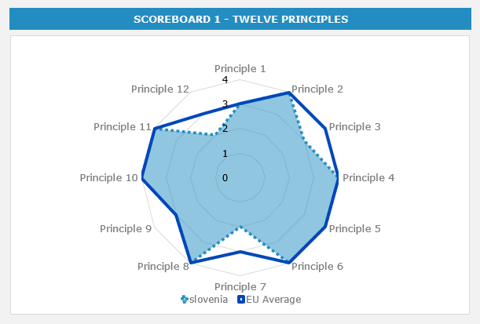


2 Digital Public Administration Highlights 11
3 Digital Public Administration Political Communications 12
4 Digital Public Administration Legislation 22
5 Digital Public Administration Governance 30
6 Digital Public Administration Infrastructure 37
7 Cross-border Digital Public Administration Services for Citizens and Businesses 63
Please note that the data collection exercise for the update of the 2021 edition of the Digital Public Administration factsheets took place between March and June 2021. Therefore, the information contained in this document reflects this specific timeframe.
Country
Profile
1
Population: 83 384 680 inhabitants (2020)
GDP at market prices: EUR 626 576.2 million (2020)
GDP per inhabitant in PPS (Purchasing Power Standard EU 27=100): 64 (2020)
GDP growth rate: 1.8% (2020)*
Inflation rate: 12.3% (2020)
Unemployment rate: 13.2% (2020)
General government gross debt (Percentage of GDP): 30.4% (2018)**
General government deficit/surplus (Percentage of GDP): -2.77% (2017)***
Area: 783 562 km²****
Capital city: Ankara
Official EU language: Turkish
Currency: Turkish lira (TRY)
Source: Eurostat (last update: October 2021), World Bank*,Trading Economics**, Fiscal Balances and public debt - OECD***, Worldatlas****
The following graphs present data for the latest Digital Public Administration Indicators for Turkey compared to the EU average. Statistical indicators in this section reflect those of Eurostat at the time the Edition is being prepared.
Percentage of individuals using the internet for interacting with public authorities in Turkey | Percentage of individuals using the internet for obtaining information from public authorities in Turkey |
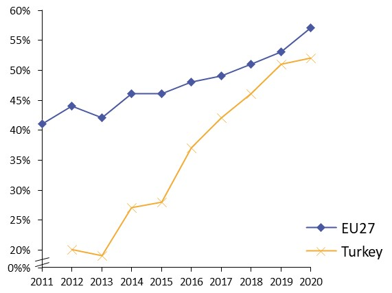 | 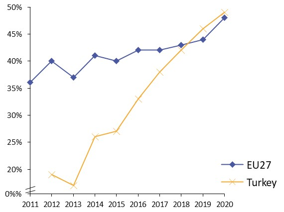 |
Percentage of individuals using the internet for downloading official forms from public authorities in Turkey | Percentage of individuals using the internet for sending filled forms to public authorities in Turkey |
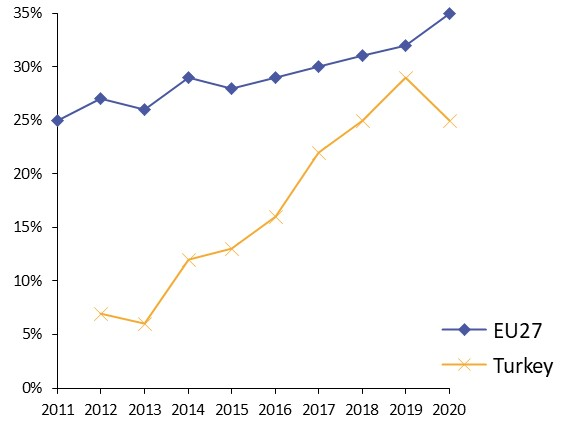 | 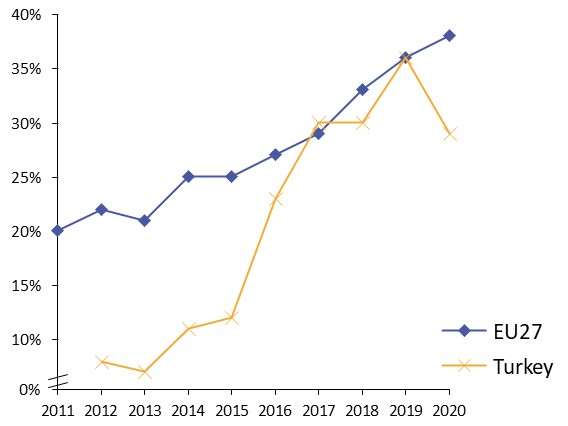 |
In 2017, the European Commission published the European Interoperability Framework (EIF) to give specific guidance on how to set up interoperable digital public services through a set of 47 recommendations. The picture below represents the three pillars of the EIF around which the EIF Monitoring Mechanism was built to evaluate the level of implementation of the EIF within the Member States. It is based on a set of 71 Key Performance Indicators (KPIs) clustered within the three main pillars of the EIF (Principles, Layers and Conceptual model), outlined below.
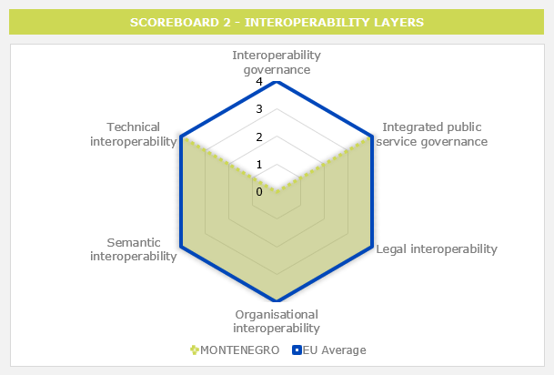
Source: European Interoperability Framework Monitoring Mechanism 2020
For each of the three pillars, a different scoreboard was created to breakdown the results into their main components (i.e. the 12 principles of interoperability, the interoperability layers and the components of the conceptual model). The thematic areas are evaluated on a scale from one to four, where one means a lower level of implementation and 4 means a higher level of implementation. The graphs below show the result of the second EIF Monitoring Mechanism data collection exercise for Turkey in 2020.
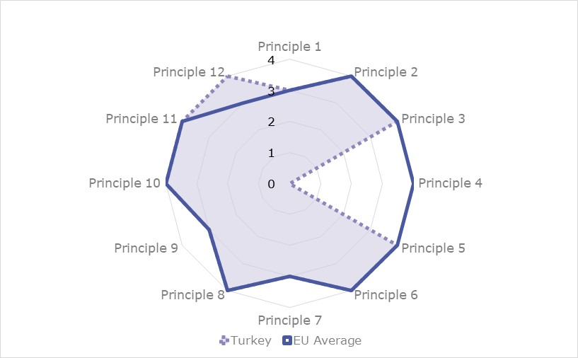
Source: European Interoperability Framework Monitoring Mechanism 2020
Turkey’s results in Scoreboard 1 show an overall good implementation of the EIF principles, despite the lack of data for the Principle 4 (Reusability). Turkey scores above the European average for the Principle 12 (Assessment of Effectiveness and Efficiency) with a maximal score of 4 and meets the European average for every other principle. The mid-upper performance for the Principle 9 (Multilingualism) indicates an area of improvement for Turkish public administrations that could better their use of information systems and technical architectures that cater for multilingualism when establishing a European public service. More specifically, the number of language resources and the extent to which business regular operations’ mobility is possible could be improved.

Source: European Interoperability Framework Monitoring Mechanism 2020
The Turkish results for the implementation of interoperability layers assessed for Scoreboard 2 show a very good performance with maximal scores of 4 for every interoperability layer. Despite the score of 4 obtained for the implementation of interoperability governance, Turkish public administrations could improve the implementation of the Recommendation 23 specifically, which independently gets a lower score of 1, by enhancing their consultation of relevant catalogues of standards, specifications and guidelines at national and EU level, in accordance with their National Interoperability Frameworks (NIFs), when procuring and developing ICT solutions.
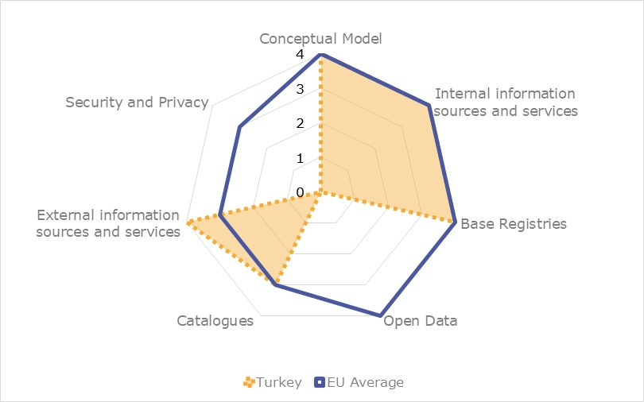
Source: European Interoperability Framework Monitoring Mechanism 2020
Turkey’s scores assessing the Conceptual Model in Scoreboard 3 show a good performance in the implementation of all recommendations, despite the lack of data in the areas related to open data and security and privacy. In line with the European average, Turkey gets a maximal score of 4 for base registries and internal information sources and services and for the conceptual model itself, as well as for external information sources and services, scoring above the European average in this area. For catalogues, Turkey obtains an upper middle score of 3. In order to reach a higher performance in catalogues, a potential area of improvement could be to enhance the implementation of Recommendation 44, on the provision of catalogues of public services, public data, and interoperability solutions and the use of common models for describing them.
Additional information on Turkey’s results on the EIF Monitoring Mechanism is available online through interactive dashboards.
The graph below presents the main highlights of the latest eGovernment Benchmark Report, an assessment of eGovernment services in 36 countries: the 27 European Union Member States, as well as Iceland, Norway, Montenegro, the Republic of Serbia, Switzerland, Turkey, the United Kingdom, Albania and Macedonia (referred to as the EU27+).
The study evaluates online public services on four dimensions:
The 2021 report presents the biennial results, achieved over the past two years of measurement of all eight life events used to measure the above-mentioned key dimensions. More specifically, these life events are divided between six ‘Citizen life events’ (Career, Studying, Family life, measured in 2020, and Starting a small claim procedure, Moving, Owning a car, all measured in 2019) and two ‘Business life events’ (Business start-up, measured in 2020, and Regular business operations, measured in 2019).
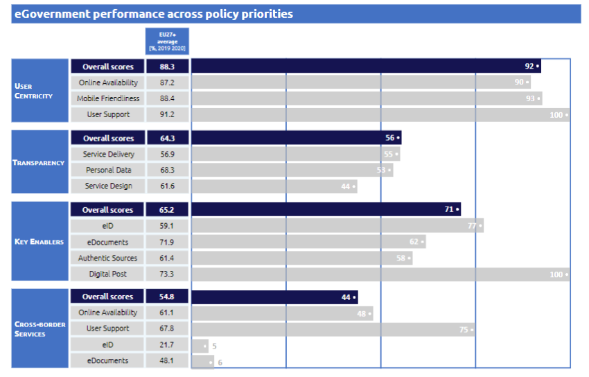
Source: eGovernment Benchmark Report 2021 Country Factsheets

Digital Public Administration Highlights
2
Digital Public Administration Political Communications
The National Cybersecurity Strategy and Action Plan for the period 2020-2023 was put into force in 2020. In line with the Turkish 2023 goals, the National Cyber Security Strategy and Action Plan (2020-2023), will determine the goals, strategies and actions of the upcoming period. It aims to further the gains achieved in the strategies implemented before. In the development of the strategy, the effects of technological developments, trends in cyber threats, national needs and international practices were carefully examined and targets were set.
Digital Public Administration Legislation
Regulation on e-seal was made in the Electronic Signature Law No.5070 in the Official Gazette dated 28 January 2021, and the relevant regulation entered into force on 3 February 2021. With the e-seal, which can be defined as a kind of e-signature that verifies the corporate identity of the legal person, it is aimed to make the legal person's transactions in the electronic environment in a secure and verifiable manner.
Digital Public Administration Infrastructure
Public Health Management System (HSYS) ensures a holistic structure for various applications which are deemed necessary in public health, quality data compilation, analysis and reporting of compiled data and harmonization of all process with international standards and grants monocentric health management. HSYS facilitates all kinds of registration, follow-up, and reporting processes of healthcare facilities that provide primary healthcare services, and it helps establish health policies that consider collected data. Since the first COVID-19 case in 2020 in Turkey, rapid development has been made within HSYS for both case and contact follow-up. The aforementioned system has been integrated into the entire health system, including public, private, and university hospitals. Besides, new features have been included under the requirements related to pandemic management. HSYS has been utilized as the primary information system during pandemic management.

Digital Public Administration Political Communications
3
Eleventh Development Plan (2019–2023)
On 18 July 2019, the Eleventh Development Plan (2019–2023) was approved by the Grand National Assembly of Turkey. Being the first Development Plan prepared after the adoption of the new Presidential Government System, the plan was shaped with a long-term perspective to constitute the main roadmap for improving the international position of the country and the welfare of the society. The plan was prepared during a period of rising geopolitical and economic uncertainties and reshaping of global power balances. Therefore, the document is formulated in a way to control potential risks while trying to manage national resources as efficiently as possible to increase prosperity and ensure a fair sharing of economic gains.
Designed as the first five-year part of a fifteen-year perspective, the Development Plan envisages an overall change and breakthrough in all fields, and a resolute and uninterrupted implementation in the long-term perspective. The plan aims to transform the economic structure, to maintain stability and sustainability in the long-term, while boosting human capital through a breakthrough in education as well as technology and innovation capacities through a boost in national technology.
As a holistic and multi-dimensional national policy document, it focuses on facilitating competitiveness and efficiency increase in all fields and is composed of five fundamental pillars: (i) stable and strong economy; (ii) competitive production and productivity; (iii) qualified human and strong society; (iv) liveable cities and sustainable environment; and (v) rule of law, democratisation and good governance.
Specifically for digital transformation, the goal is that the control, permit and approval processes implemented by the various government agencies, and the documents required for these processes will be reviewed by the relevant agencies with a view to making them rational and reducing bureaucracy through digitisation.
Moreover, the Eleventh Development Plan aims to transfer public services to the electronic environment through modernisation actions and process improvements that will ensure effectiveness and interoperability with a user-oriented perspective, and increase service delivery and usage through the eGovernment Gateway. The plan aims to achieve a 95% satisfaction rate for eGovernment services by 2023, while raising the uptake of electronic services to 70% with further services integrated in the eGovernment Gateway.
2016–2019 National eGovernment Strategy and Action Plan
The 2016–2019 National eGovernment Strategy and Action Plan was Turkey’s first comprehensive National eGovernment Strategy and Action Plan, compatible with the National Development Plan and the Information Society Strategy. The document coordinated different studies concerning the structuring of eGovernment with a holistic approach, taking Turkey’s specific conditions, new technological developments and global trends into account.
In particular, the 2016–2019 National eGovernment Strategy and Action Plan aimed to provide the acceleration needed to guide Turkey’s digital transformation, and achieve social, economic and environmental development. By implementing the eGovernment Strategy and Action Plan, the objective was to develop the capacity needed in line with the Turkey’s 2023 Vision and to improve the welfare of the country. In line with this goal, the vision of the 2016-2019 National eGovernment Strategy and Action Plan was to improve the quality of life for the society thanks to an efficient eGovernment.
Four strategic aims, 13 objectives and 43 actions were determined in line with the vision of the document. More in detail, the following strategic aims were defined to achieve the vision of an eGovernment ecosystem:
The progress made in the framework of the 2016–2019 eGovernment Action Plan is summarised below:
The eGovernment Portal offers a means for participating and monitoring the progress of the Action Plan and allows users and authorities to share announcements.
The Digital Transformation Office (DTO) is responsible for the National eGovernment Strategy and Action Plan for the period after 2020. In this respect, the OECD Digital Government Review (DGR) for Turkey project, which we carry out together with the OECD will be the main input for our digital government roadmap. So far, DTO managed to ensure the participation of 115 public bodies and agencies in the survey conducted within the scope of this project. And peer review workshops will further align our institutions with OECD Digital Government Policy Framework. Thus, the institutions will gain deeper insight about their own skills and competencies regarding different aspects of digital governance. With OECD partnership, DTO is about to lay the foundations of a concise policy regarding Digital Government. It is expected that DGR project to provide us fundamental inputs with the key findings through a holistic perspective,
In the meanwhile, the development of public cloud and national data strategies has been initiated, with the conceptual framework phase started in early 2021.
Ministry of Health Strategic Plan (2019-2023)
The main goal of the Ministry of Health Strategic Plan 2019-2023 is to protect and improve citizens’ health and provide equitable access to quality care for all. The strategic plan includes six goals, 41 objectives, 194 strategies and 223 performance indicators:
In the Strategic Plan, the actions related to digitalisation and development of information systems have been placed under the title of ‘Technology and Information Infrastructure Analysis’, specifying opportunities and targets.
The main objectives related to information system operations are specified under goal 5, with a sub-objective to strengthen the healthcare system by boosting the use of information technologies (IT) in healthcare service delivery and decision-making processes. In this respect, the strategies for the goal are as follows:
Digital Turkey and Mitigation of Bureaucracy Meetings
As required by the interoperability principle, the highest level of participation is ensured in efforts to reduce bureaucracy through eGovernment actions, and the work is carried out through periodic meetings held under the coordination of the Digital Transformation Office of the Presidency and the chairmanship of the Vice President.
In order to make governance more effective, in addition to the ministries and relevant public institutions that had already participated in these meetings, professional organisations in the nature of public institutions and the necessary organisations from the business world were included in the participant lists. During the meetings, decisions are made on the services to be transferred to the eGovernment Gateway, data sharing between institutions, and simplification of service processes.
More in detail, with the ‘Digital Turkey and Mitigation of Bureaucracy’ meetings, it was decided that all public institutions will digitise their services on the basis of the ‘zero documents’ principle. The services in question are firstly defined by the institutions in the Service Inventory Management System. The services which can be digitised are then transferred to the eGovernment Gateway through process simplification, legislative regulation and transforming documents with wet signature into electronic form or uploading them to the system. The twelfth meeting was held in March 2021.
In line with ‘Digital Turkey and Mitigation of Bureaucracy’ understanding, the Digital Transformation Office launched the process of integrated service provision with the Digital Turkey Platform. In this aspect, such topic-based integrated services focusing on user as ‘My Vehicles’, ‘My Residence and ‘My Working Life’ facilitates the lives of Turkish citizens. With the integrated service ‘My Working Life’, citizens can access all the tasks and procedures regarding the working life such as job seeking, employment, insurance, retirement and professional competence from a single screen in an integrated way at the e-Government Gateway, aka Digital Turkey Platform. With the integrated service ‘My Residence’, citizens can perform all businesses and transactions based on address data. With the integrated service ‘My Vehicles’, both legal and natural persons can;
Presidential Annual Programme 2021
The main objective of the Presidential Annual Programme 2021 is to transfer public services to the electronic environment through modernisation and process improvements that will ensure efficiency and interoperability with a user-oriented perspective, as well as to increase the provision and use of services through the eGovernment Gateway. In this regard, the priority areas of action in the relevant programme were determined as follows:
Following the Presidential Annual Programme 2021, the Turkish government aimed to develop the basic information systems necessary to provide eGovernment services. Additionally, the government aimed to setup a joint infrastructure to ensure that these information systems operate in a sustainable manner. In this context, the regulations concerning trust services (eStamp, SSL certificates, eSignature, eSeal and registered e‑mail) were to be harmonised with the EU Regulation on electronic identification and trust services (eIDAS Regulation).
The regulation regarding the electronic identity (eID) card is finalised. The Republic of Turkey Electronic Identity Card Authentication System Regulation, published in the Official Gazette of the Republic of Turkey dated 22 October 2020 and numbered 31282, regulates the procedures and principles of the ID Authentication System (eID Verification System or EVS, as the Turkish EKDS). Pursuant to the regulation, the service provider certification applications in the field of eID cards shall be made to the General Directorate of Population and Citizenship Affairs. The applications shall be finalized by the System’s Evaluation Commission and submitted to the Ministry of Interior for approval. Waiting for the approval, the ID Authentication Service Providers (ASP) shall commence providing their services.
In the regulation, the provisions regarding the processing, protection and security of personal data also draw attention. Some of these provisions can be summarised as follows:
Other procedures and principles regarding security relating to the system shall be determined by the General Directorate.
National Cybersecurity Strategy and Action Plan
The National Cybersecurity Strategy and Action Plan for the period 2020-2023 was put into force in 2020. In line with the Turkish 2023 goals, it will determine the goals, strategies and actions for the upcoming period, aiming to further the gains achieved in the strategies implemented before.
In the development of the strategy, the effects of technological developments, trends in cyberthreats, national needs and international practices were carefully examined and targets were set accordingly. The continuous actions carried out in the 2013-2014 and 2016-2019 periods were reviewed within the context of the current situation and the planned studies. Subsequently, the necessary improvements were made. Within this framework, the strategic goals that were set are gathered under eight main headings:
Based on the principle of interoperability, the Information and Communication Security Guide was published by the Digital Transformation Office of the Presidency for all public institutions and organisations, and enterprises providing critical infrastructure services. The guide was prepared on the basis of Presidential Circular No. 2019/12, as a complementary document regarding the security level of information assets according to institutions and the kind of measures to be taken.
Electronic Public Information Management System
The Electronic Public Information Management System (KAYSİS), run by the Digital Transformation Office of the Presidency, is one of the basic information systems used in the digital definition of the basic elements of public administration. This framework system consists of subsystems that are linked to each other in a relational network. The two most important are the State Organisation Central Registration System (DETSIS) and the Service Inventory Management System (HEYS): the organisational structures of public institutions and organisations are digitally identified through the State Organisation Central Registration System, while public services are defined electronically through the Service Inventory Management System, with the services ought to be transferred to the eGovernment Platform and the relevant processes associated with their respective legislative references.
Presidential Annual Programme 2021
Following the Presidential Annual Programme 2021, the Turkish government aims to introduce eProcurement in all types of purchasing procedure. That way, the programme intends to increase the efficiency of public procurement processes with a view to improving the implementation of services and increasing competition.
The following activities are listed in the Presidential Annual Programme 2021 in the field of eProcurement:
Presidential Communication Centre
The Presidential Communication Centre (Cumhurbaşkanlığı İletişim Merkezi, CİMER) is the channel allowing citizens to request documents and information online as well as making comments and proposals for public institutions. In other words, CIMER enables citizens to communicate their requests, suggestions and complaints to the public institutions. The centre can be cited as a best practice for citizen engagement and open government. The main aims of CIMER are (i) strengthening the communication between the State and the citizen in the context of participatory democracy; and (ii) contributing to a public management approach that provides transparency, accountability and citizens satisfaction. In addition, it provides citizens with information about the judicial and legislative authorities in matters that are not related to administrative procedures.
Judicial Reform Strategy
In Turkey, improving the use of technology in the justice sector is of paramount importance. In addition to integrating the National Judiciary Informatics System (UYAP) with other institutions, many applications were developed to strengthen access to justice for beneficiaries. In particular, the integration with law enforcement units was one of the most important developments in this area. In addition, the application ‘Mobile Information System for Lawyers’, which was prepared to increase the variety of services provided to lawyers and enable them to follow up the trial processes more easily, is also being used by lawyers effectively.
The Judicial Reform Strategy, which is seen as the main policy document in the justice sector, comprises many significant activities regarding the use of technology in judiciary and justice services. For instance, objective 4.7 of the strategy underlines that through the use of technology justice services will be citizen-oriented. The activities laid down under this objective are the following:
National Artificial Intelligence Strategy
The National Artificial Intelligence Strategy 2021-2025 has entered into force. The Presidential Circular No. 2021/18 on the "National Artificial Intelligence Strategy 2021-2025", prepared in cooperation with the Digital Transformation Office of the Presidency of the Republic of Turkey and the Ministry of Industry and Technology, and with active participation of all relevant stakeholders, has entered into force upon its publication in the Official Gazette dated 20/08/2021 and numbered 31574.
NAIS was prepared as per the Eleventh Development Plan and Presidential Annual Programs, in line with the "Digital Turkey" vision and the "National Technology Initiative". The Strategy was prepared with a participatory approach. A comprehensive work was carried out with the contributions of many stakeholders such as public institutions, academia, professional organizations, private sector, NGOs and international organizations.
Having the vision "creating value on a global scale with an agile and sustainable AI ecosystem for a prosperous Turkey", the Strategy was designed around 6 strategic priorities. To that end, the National AI Strategy draws up the Turkish roadmap in the field of AI technologies and includes the steps to be taken in critical technological areas. It presents the measures that will place works in the field to be carried out nationally on common ground and the governance mechanism determined to implement these measures. Over time, the measures will adapt to uncertainties by evaluating Turkey’s changing strengths and weaknesses, opportunities and threats.
Within the National AI Strategy and initiatives in the field, Turkey identified six pillars transforming the society and the economy around human, data and platform conditions. In this context, Turkey needs to have high‑quality data respecting ethical principles. Hence, the initial focus is to enable trustworthy data access nationwide, then expanding to international cooperation. To that end, the OECD AI Recommendations, the European Council and Commissions’ efforts on AI ethics, the work of existing bodies active in the field, e.g. the European Commission Ad Hoc Committee on Artificial Intelligence (CAHAI), and the efforts of UNESCO on AI ethics and principles are highly acknowledged in the draft strategy.
The draft AI strategy sets the measures that will be implemented between 2021 and 2025. The strategy’s basic approach is to create an AI ecosystem that tries, discovers, learns and constantly updates itself. Aligned with the Eleventh Development Plan and the Decrees of the Science, Technology and Innovation Policies Board, the strategy is designed around the following priorities:
Within the scope of these strategic priorities, 24 objectives and 119 measures were determined.
The implementation process of the Strategy will be coordinated by the "Steering Committee", which will be chaired by the Vice President. The governance mechanism embraces AI Ecosystem Advisory Group and working groups as well, where all relevant stakeholders will be represented.
Action plans, in which the implementation details of the Strategy will be laid out, will be prepared by the relevant Ministries under the coordination of the Steering Committee.
The rapidly transforming nature of the AI field necessitates a dynamic implementation process for the Strategy. Governance mechanism of NAIS will enable responding quickly to the opportunities, risks and uncertainties that may arise for our country, with the participation of all stakeholders.

Digital Public Administration
Legislation
4
eGovernment Legislation
Presidential Decree No. 1 gave the Digital Transformation Office the responsibility of coordinating the digital transformation of the public sector.
On 24 October 2019, following Presidential Decree No. 48, the eGovernment tasks performed by the Ministry of Transport and Infrastructure of the Republic of Turkey were assigned to the Digital Transformation Office. The decree also introduced the position of Government Chief Digital Officer and assigned this role to the President of the Digital Transformation Office. As a result, the Digital Transformation Office now coordinates all activities related to eGovernment, digital government, cybersecurity, critical infrastructures, big data and AI.
On 26 March 2020, Presidential Decree No. 2303 relieved the Ministry of Transport also from the duty of establishing, operating and managing the eGovernment Gateway. Consequently, all tasks related to the eGovernment Gateway were entrusted to the Digital Transformation Office.
On 11 October 2018, Presidential Circular No. 2018/13 was published in the Official Gazette. According to this circular, all public services, including those provided electronically, should be provided in line with the Once-Only principle, meaning that all applications by citizens shall be completed expeditiously at the point of application.
The regulations prepared regarding the services provided by the departments of the Ministry of Culture and Tourism contain articles regarding what service can be provided and how through the eGovernment system. However, no separate regulations exist for services carried out through eGovernment.
Interoperability Principles in Public Information Systems
Circular No. 2009/4 on Interoperability Principles in Public Information Systems has been in force since 2009.
Freedom of Information Legislation
The Right to Information Act (Law No. 4982) went into effect in April 2004. The act was then supplemented by a circular issued by the Prime Ministry titled ‘The Exercise of the Right of Petition and Access to Information’.
The act granted citizens and legal entities the right to information from public institutions and private organisations that qualify as public institutions. Following the enforcement of the act in April 2004, all public institutions established Right to Information Units and started to accept information requests, including those made through the internet. In November 2005, the Right to Information Act was amended to enable citizens to dispute all decisions by State agencies regarding denials of requests for information.
Re-use of Public Sector Information
The re-use of Public Sector Information (PSI) is partly covered by the Right to Information Act (Law No. 4982). In addition, the 2016–2019 National eGovernment Strategy and Action Plan also provided for actions regarding the re-use and sharing of PSI, such as the reformation of public sector information, and the establishment of the Open Data and Sharing Portal and the Public Expenditure and Monitoring Portal.
Regulation on the Turkish National Electronic Identity Card
The Regulation on the Turkish National Electronic Identity Card was published in the Official Gazette on 3 December 2019, and covers the procedures and principles regarding the design, procurement, production, application, personalisation, distribution, delivery, cancellation, disposal and identity verification method of the identity card of the Republic of Turkey. The regulation also regulates the receiving and processing of biometric data.
By-Law on the Procedures and Principles Pertaining to the Implementation of the Electronic Signature Law
Following the introduction of the By-Law on the Procedures and Principles Pertaining to the Implementation of the Electronic Signature Law, six Electronic Certificate Service Providers were authorised as of April 2021. The Public Certificate Centre is the body responsible for providing electronic certificate services to all public institutions. The Centre was established by a Prime Minister’s circular mandating that all public institutions needing electronic certificate services shall acquire the service from this body.
Law No. 6661, Amending the Law on Military Service and Other Laws
Articles 8 and 12 of Law No. 6661 allow for biometric data to be embedded into the new eID cards and those cards to be used for authentication purposes. Digital signature‑ready eID cards also started to be distributed in 2017.
Law No. 5070 on Electronic Signatures
The Law on Electronic Signatures was enacted in 2004. The purpose of this law was to define the principles applying to the legal and technical aspects, and the application of electronic signatures. The law covers the legal status of electronic signatures, the operations concerning electronic signatures and the activities of Electronic Certificate Service Providers. The law ensures that qualified electronic signatures, produced according to the identified procedures, have the same legal effect as handwritten signatures. The total number of qualified electronic certificates produced from 2004 to March 2021 reached 5.5 million. 1.8 million of them are in active use.
Law No. 5070 on Electronic Seals
The Regulation on eSeals is contained in Law No.5070 on Electronic Signatures, published in the Official Gazette of 28 January 2021, and entered into force on 3 February 2021. The eSeal, which can be defined as a kind of eSignature that verifies the corporate identity of the legal person, aims to guarantee that the legal person’s transactions in the electronic environment are made in a secure and verifiable manner. In addition, the electronic seal ensures that the corporate identities are legally proven in electronic transactions.
Law on Electronic Communications
Law No. 5809/2008, Article 60, para 10, gives the Information and Communication Technologies Authority (ICTA) the power to take the necessary measures to fight against cyberattacks with the aim of ensuring national cybersecurity. Also, according to Article 60, para 11, of the same law, the ICTA has the right to ask any kind of information, document, record and data from any legal private and public entity, and real person. In addition, according to the same paragraph, the ICTA enjoys the power to enforce and impose sanctions (resulting in a monetary penalty between EUR 155 and EUR 1 550) on these entities in case they do not take the necessary measures to fight against cyberattacks.
Finally, Article 51 of Law No. 5809/2008 regulates the protection of privacy and the processing of personal data in the electronic communications sector and stipulates the conditions under which cross-border flow of traffic and location data is allowed.
Regulation Regarding Electronic Notification
The Regulation Regarding Electronic Notification was published in the Official Gazette on 6 December 2018.
Presidential Circular on Information Security Measures 2019/12
The transfer of information to digital environments, the direct access to information, the digitisation of infrastructures and the widespread use of information management systems bring serious security risks. In this context, the Presidential Circular on Information Security Measures 2019/12 was issued to reduce the security risks encountered and to ensure the security of critical types of data that may threaten national security or lead to the deterioration of the public order.
To guarantee data protection, the Presidential Circular aims to ensure that data owned by a country remains within the boundaries of that country. Additionally, it highlights that the production and use of national cybersecurity solutions represents one of Turkey’s main priorities. Finally, it also states that “an Information and Communication Security Guide shall be prepared under the coordination of the Digital Transformation Office in order to mitigate and neutralize security risks and especially ensure the security of critical data”.
Information and Communication Security Guide
Following the Presidential Circular on Information Security Measures 2019/12, the drafting of the Information and Communication Security Guide was initiated under the coordination of the Presidency of the Digital Transformation Office of the Republic of Turkey. In this context, during almost one year of work, a 5-day workshop was organised. Contributions of 240 experts from 51 institutions and organisations as well as 16 ministries were received, and 2 660 opinions and recommendations were evaluated. The guide was then approved and published on 24 July 2020.
The Information and Communication Security Guide identifies different levels of security requirements that must be implemented in the IT systems of public institutions and organisations operating critical infrastructures, in accordance with national and international information security standards. IT security represents one of the most important objectives for public institutions, companies providing critical public services and individuals. Being the first national reference document in this area, the guide provides guidance to public institutions to secure their IT infrastructure providing critical public services. It covers all aspects of information security, from network to Internet of Things (IoT) security, and also includes measures to be taken in specific critical sectors, like eCommunication. The guide will be a live document which will be regularly updated in accordance with the emerging security needs, developing technologies and the National Cybersecurity Strategy and Action Plans.
Personal Data Protection Law
The Personal Data Protection Law was published in the Official Gazette on 7 April 2016, No. 29677. This law regulates the conditions for processing and transferring personal data, sets the rights of the data subject as well as the obligations of the data controller and the data processor, and provides for the establishment of the Personal Data Protection Authority.
Ministry of Health Information Security Legislation
The Ministry of Health Information Security Policies Guide was published to comprehensively explain the issues included in the Ministry of Health Information Security Policies Directive to take measures to (i) ensure information security in the processing of information in the Ministry; (ii) guarantee the information is evaluated within the scope of confidentiality, integrity and accessibility and is protected from all intentional or accidental threats from inside or outside; and (iii) determine the procedures and principles to be followed in terms of information security in the effective, correct, fast and secure realisation of the activities carried out.
By-Law on Network and Information Security in the Electronic Communications Sector
The By-Law on Network and Information Security in the Electronic Communications Sector was adopted on 13 July 2014 and identifies the obligations of operators with respect to network and information security in the electronic communications sector. In particular, the by-Law provides for the principles and basis for the measures to be taken to eliminate the risks stemming from threats and vulnerabilities with the aim of guaranteeing data, hardware-software and personnel security. Finally, the by-Law explicitly states that personal information processing and privacy protection are not under its scope.
By-Law on the Processing of Personal Data and Protection of Privacy in the Electronic Communications Sector
The Electronic Communications Law No. 5809 sets out the basic principles and procedures in order to ensure the protection of privacy and personal data in the electronic communications sector. In order to clarify the issues related to the implementation of the provisions of Law No. 5809 and identify secondary issues, the By-Law on the Processing of Personal Data and Protection of Privacy in the Electronic Communications Sector was prepared, taking into account the EU ePrivacy Directive (2002/58/EC). Published on 4 December 2020 in the Official Gazette, it will enter into force on 4 June 2021.
Law on Regulation of Publications on the Internet and Combating Crimes Committed by Means of Such Publications
Law No. 5651, dated 4 May 2007, clearly defines internet actors and their responsibilities, and aims to combat a limited number of specific crimes to protect children online, safeguard national security and the public order, and avoid the violation of personal rights and the right to privacy.
Several amendments have been introduced to law No. 5651 since 2007. The latest (additional Article 4) introduces certain obligations on social network providers with over 1 million daily accesses from Turkey, such as the appointment of a representative in Turkey. Furthermore, Article 29/A of the Law on the Establishment and Broadcasting Services of Radios and Televisions (Law No. 6112) was added to the law by an amendment on 21 March 2018. Finally, the Regulation on the Provision of Radio, Television and On-Demand Broadcasts on the Internet Medium was published on the Official Gazette of 1 August 2019. It was prepared on the basis of Article 29/A of the Law on the Establishment and Broadcasting Services of Radios and Televisions with the main aim of regulating internet broadcasts.
Privacy and Protection of Private Life
Section five of the 1982 Turkish Constitution is entitled ‘Privacy and Protection of Private Life’. Article 20 of the Turkish Constitution addresses the issue of the privacy of the individual’s life, stating that everyone has the right to demand respect for their private and family life. The article continues by affirming that the privacy of the individual and family life cannot be violated. Additionally, it states that, unless there is a decision duly passed by a judge in cases explicitly defined by law, neither the person nor his/her private papers, nor the belongings of an individual shall be searched or seized. Moreover, with the 2010 amendment of the Constitution, citizens were granted the right to request the protection of their personal data. More in detail, citizens have the right to be informed about their own personal data, to access this data, to request data to be corrected or deleted, and to learn whether the data has been used for the purposes that the data was obtained for in the first place. Thus, individual data can be processed only as foreseen by the law or with the consent of the person, as mentioned in Article 22.
CSIRT Setup and Management Guide
The Communiqué on the Procedures and Principles Regarding the Establishment, Duties and Activities of Cybersecurity Incident Response Teams, dated 11 November 2013, was published in the Official Gazette and includes the decision to establish Cybersecurity Incident Response Teams (Institutional CSIRTs and Sectoral CSIRTs) under the framework of the National Cybersecurity Strategy and Action Plan 2013-2014.
The tasks to be carried out to that end, i.e. establishing Sectoral CSIRTs and Institutional CSIRTs within the Ministry, ensuring the necessary coordination and establishing an audit mechanism, were entrusted, on behalf of the Ministry, to the General Directorate of Health Information Systems through the Consent of the Ministry for the Establishment of CSIRTs dated 31 January 2016. Subsequently, the Institutional CSIRT Setup and Management Guide was prepared and published as an annex of the Information Security Policies Directive. The guide defines the qualifications of the Institutional CSIRT personnel and the training that needs to be attended, the procedures to be applied both before and after a cyber incident, and the established principles of the Institutional CSIRT.
Information and Communication Security Guide Compliance Auditor and Company Certification Programme
The minimum conditions to be met by the companies and personnel who will carry out the audit of compliance with the Information and Communication Security Guide have been determined. In addition, a programme has been established to certify those who meet these conditions.
The Certification Programme was prepared by carrying out studies in coordination with Turkish Standards Institute (TSE). Institutions and organizations that will carry out audit activities through service procurement are required to receive services from certified companies that have completed the Certification Programme prepared together with the Turkish Standards Institute (TSE).
The Certification Program has been created to ensure that companies and personnel who meet the necessary conditions are certified by the training they will receive and the exam they will take afterward, or they will be certified only by taking the exam. Within the scope of the Certification Program in 2021, it is planned to carry out the first trainings and start the authorization process.
Adaptation of Information Security and Cyber Security Standards
With Turkish Standards Institute (TSE), efforts were made to adapt, develop and translate information security and cyber security standards into Turkish within the framework of critical infrastructure sectors. Within the scope of the study, the adaptation of 9 standards regarding different critical sectors such as ISO/IEC 27011, ISO/IEC 27799, ISO/IEC 27019, ISO/IEC 27017, ISO/IEC 27018, ISO/IEC 31000, ISO/IEC 27031, ISO/IEC 62443 and ISO/IEC27701 has been completed. . It is planned to carry out studies to bring these standards into national legislation in the upcoming period.
By-Law on the Procedures for the Provision of Public Services
In the context of the Once-Only principle implementation, the Presidency is reviewing the By-Law on the Procedures for the Provision of Public Services, so that no document is required by a public institution if the data is already provided by another public institution.
Along these lines, the Digital Transformation Office coordinated the amendment of 42 by-laws and 13 communications, which was subsequently published in the Official Gazette on 8 July 2019. The revision led to the streamlining of 111 processes with the objective of reducing the time spent on bureaucratic procedures both by citizens and the public sector. Furthermore, a wide range of applications in a variety of fields, such as jobs, scholarships, permits, licenses and certificates, can now be made through Digital Turkey (eGovernment). While the average number of documents required per service was 3.80 before the transition from eGovernment to Digital Turkey, this number is now down to 0.34.
Regulation regarding the Data Sharing of the Land Registry and Cadastre
The Regulation regarding the Data Sharing of the Land Registry and Cadastre was published in the Official Gazette on 1 November 2018. The purpose of the regulation is to regulate the procedures and principles regarding the establishment, duties, powers and responsibilities of the General Directorate of the Land Registry and Cadastre under the Ministry of Environment and Urbanisation to (i) plan, execute and ensure the renewal and updating of cadastral work for immovable property; (ii) create a land register; (iii) ensure the archiving and protection of information; (iv) carry out mapping activities; and (v) determine production standards.
Regulation regarding the Principles of Implementation of the Integrated Public Financial Management Information System
The Regulation regarding the Principles of Implementation of the Integrated Public Financial Management Information System was published in the Official Gazette on 26 June 2018. The purpose of this regulation is to determine the procedures and principles regarding the obligations of the authorised data storage organisation, the manner in which the information is reported to the data storage organisation and the tasks to be performed by this organisation.
By-Law on the Identity Registry System Sharing
The By-Law on the Identity Registry System Sharing was published on 8 December 2006, providing for the procedures for sharing the electronic information available in the Identity Registry with public organisations.
Regulation regarding the Change of Electronic Procurement Implementation
The Regulation regarding the Change of Electronic Procurement Implementation was published in the Official Gazette on 19 June 2018 and 16 March 2019. The purpose of the regulation is to regulate the procedures and principles regarding the realisation of the tenders within the scope of the Public Procurement Law on a partially or fully electronic platform.
Public Procurement Law No. 4734
Law No. 4734, published on 22 January 2002, enabled the implementation of electronic public procurement. Further amendments were introduced to the law in 2011 so as to regulate the procedures and principles for the conduct of tenders on the Electronic Public Procurement (EPP) Platform. The amended law defines some normative issues with regard to tenders, regulates the preparation for the tender process, and lays down the rules for the preparation, submission, opening and evaluation of eTenders.
Authorisation for the Implementation of Investment Incentive Certificate Transactions in the Electronic Environment
The Authorisation for the Implementation of Investment Incentive Certificate Transactions in the Electronic Environment was published in the Official Gazette on 31 May 2018.
Law regarding the Improvement of the Investment Environment
The Law regarding the Improvement of the Investment Environment was published in the Official Gazette on 15 February 2018, including several articles referring to the digitisation of public data and data exchange electronic platforms.
Regulation regarding Service Providers and Agent Service Providers in Electronic Commerce
The Regulation regarding Service Providers and Agent Service Providers in Electronic Commerce was published in the Official Gazette on 15 February 2019. The purpose of the regulation is to regulate the procedures and principles regarding the general information that service providers are obliged to keep on the network, the information they need to provide to the buyers and other applications related to electronic commerce.
Regulation regarding the Activities, Studies and Auditing Principles of the Data Storage Organisations
The Regulation regarding the Activities, Studies and Auditing Principles of the Data Storage Organisations was published in the Official Gazette on 19 September 2018. The purpose of this regulation is to determine the procedures and principles regarding the obligations of the authorised data storage organisation, the manner in which the information is to be reported to the data storage organisation, and the tasks to be performed by this organisation.
eCommerce Legislation
Law No. 6563 on eCommerce was published on 23 October 2014. The law regulates the principles and procedures regarding eCommerce, the liabilities of eCommerce service providers and intermediaries, electronic contracts, spam, disclosure responsibilities and penalties to be applied in case of breach.
Law No. 7194 on the Amendment of Certain Laws Including Decree Law No. 375
Following Law No. 7194, dated 7 July 2019, a digital service tax was introduced on the income obtained from advertisements, and voice and visual digital contents presented by digital service providers on digital media, and the provision of digital media where users can communicate with each other. The subject of the digital service tax is the digital service provider.
Regulation on Personal Health Data
Article 378 of Presidential Decree No. 1 on the Presidential Organisation defines the procedures and practices to be followed by the central and provincial units of the Ministry of Health, and the health service providers operating in connection to that and their affiliated and related organisations within the scope of the provisions of the Personal Data Protection Law No. 6698. In addition, the Regulation on Personal Health Data entered into force after being published in the Official Gazette on 21 June 2019.
By-Law on the Internet of Things Security
The usage and number of IoT devices are increasing day by day. In this context, it is planned to determine the minimum security criteria for these devices and to adopt a regulation aiming to reduce the cybersecurity risks arising from them.

Digital Public Administration Governance
5
Digital Transformation Office of the Presidency
Presidential Decree No. 1 gave the Digital Transformation Office the responsibility of coordinating the digital transformation of the public sector.
On 24 October 2019, following Presidential Decree No. 48, the eGovernment tasks performed by the Ministry of Transport and Infrastructure of the Republic of Turkey were assigned to the Digital Transformation Office. The Decree also introduced the position of Government Chief Digital Officer and assigned this role to the President of the Digital Transformation Office. As a result, the Digital Transformation Office now coordinates all activities related to eGovernment, digital public administration, cybersecurity, critical infrastructures, big data and AI.
Each sub-department is responsible for planning eGovernment services, setting up the technical infrastructure and making it public. However, the legal arrangements regarding these are prepared by the main service units.
| Ali Taha KOÇ, PhD President of the Digital Transformation Office of the Presidency / Government Chief Digital Officer Contact details: T.C. Cumhurbaşkanlığı Çankaya Yerleşkesi Ziaur Rahman Cad. 06550 Çankaya - Ankara Phone: +90 312 403 64 00 E-mail: ali.t.koc@cbddo.gov.tr Source: http://www.cbddo.gov.tr/ |
Yavuz Emir BEYRİBEY Vice President of the Digital Transformation Office of the Presidency Contact details: T.C. Cumhurbaşkanlığı Çankaya Yerleşkesi Ziaur Rahman Cad. 06550 Çankaya - Ankara Phone: +90 312 403 64 00 E-mail: yavuz.beyribey@cbddo.gov.tr Source: http://www.cbddo.gov.tr/ |
| Muhammed Yusuf OLCA Head of the Information Technologies Department Digital Head of Digital Expertise, Monitoring and Assessment Digital Transformation Office of the Presidency Contact details: T.C. Cumhurbaşkanlığı Çankaya Yerleşkesi Ziaur Rahman Cad. 06550 Çankaya - Ankara Phone: +90 312 403 65 35 E-mail: yusuf.olca@cbddo.gov.tr Source: http://www.cbddo.gov.tr/ |
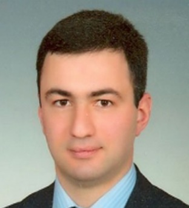 | Furkan CİVELEK Head of the Digital Transformation Coordination Department Head of Digital Technologies, Procurement and Resource Management Department Digital Transformation Office of the Presidency Contact details: T.C. Cumhurbaşkanlığı Çankaya Yerleşkesi Ziaur Rahman Cad. 06550 Çankaya - Ankara Phone: +90 312 403 65 85 E-mail: furkan.civelek@cbddo.gov.tr Source: http://www.cbddo.gov.tr/ |
Salih TALAY Head of Cyber Security Department Digital Transformation Office of the Presidency Contact details: T.C. Cumhurbaşkanlığı Çankaya Yerleşkesi Ziaur Rahman Cad. 06550 Çankaya - Ankara Phone: +90 312 403 65 36 E-mail: salih.talay@cbddo.gov.tr Source: http://www.cbddo.gov.tr/ |
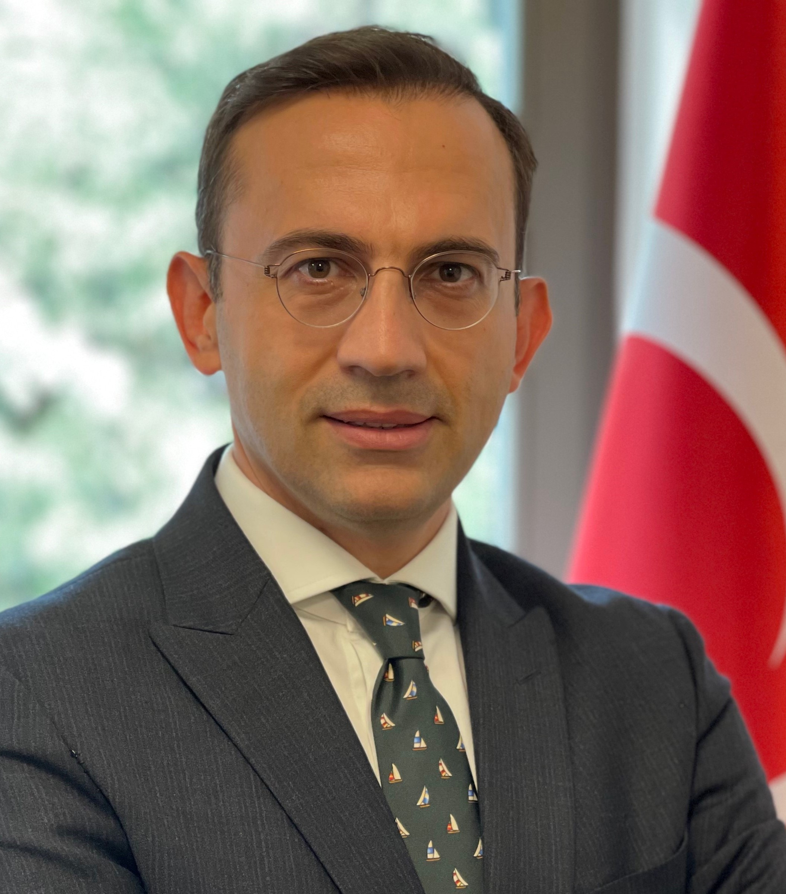 | Safa USLU, PhD Head of the International Relations Department Digital Transformation Office of the Presidency Contact details: T.C. Cumhurbaşkanlığı Çankaya Yerleşkesi Ziaur Rahman Cad. 06550 Çankaya - Ankara Phone: +90 312 403 65 45 E-mail: safauslu@cbddo.gov.tr Source: http://www.cbddo.gov.tr/ |
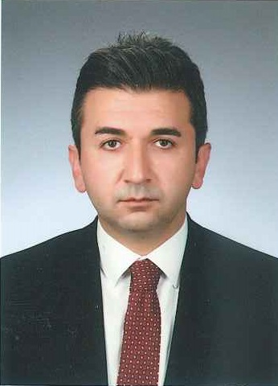 | Salih YILMAZ, PhD Head of Administrative Services Department Head of Legal Consultancy Department Digital Transformation Office of the Presidency Contact details: T.C. Cumhurbaşkanlığı Çankaya Yerleşkesi Ziaur Rahman Cad. 06550 Çankaya - Ankara Phone: +90 312 403 65 55 E-mail: salih.yilmaz@cbddo.gov.tr Source: http://www.cbddo.gov.tr/ |
Digital Transformation Office of the Presidency
Following Presidential Decree No. 48, the Digital Transformation Office performs all coordination tasks in the field of the digital public administration.
Digital Transformation Office of the Presidency
The decisions made by the Digital Transformation Office must be implemented by all relevant public institutions. The Office monitors the implementation and receives periodical reports from the relevant institutions.
Scientific and Technological Research Council of Turkey
The Scientific and Technological Research Council of Turkey (Türkiye Bilimsel ve Teknolojik Araştırma Kurumu, TÜBİTAK) is the leading public agency for managing, funding and conducting research in Turkey. The Council reports to the Ministry of Industry and Technology. It is also involved in a series of other actions related to eGovernment, such as providing guidance on the public internet sites standardisation.
TURKSAT Inc.
TURKSAT builds, develops and operates Turkey’s eGovernment Gateway, providing citizens, enterprises and government agencies with a single point of access to eGovernment services. The company also supports the digital transformation of public agencies during the integration of their services into the eGovernment Gateway by providing technical know-how.
Digital Transformation Office of the Presidency
The governmental body in charge of interoperability activities in Turkey is the Digital Transformation Office of the Presidency.
Digital Transformation Office of the Presidency
Following Presidential Decree No. 48, the Digital Transformation Office performs all coordination activities in the field of the digital public administration.
Turkish Court of Accounts
The Turkish Court of Accounts is responsible for auditing the revenues, expenditures and property of government offices operated under the general and annexed budgets on behalf of the Grand National Assembly of Turkey.
Internal Audit Function
The Information and Communication Security Guide issued by the Digital Transformation Office of the Republic of Turkey authorised the aıanternal Audit Function primarily to audit the requirements established in the Guide. They provide assurance and consultancy in accordance with international internal audit standards for different levels of security requirements that must be implemented in the IT system of public institutions. The Internal Audit Function focus on confidentiality, availability and integrity of information as well as stakeholder satisfaction compliance with the corporate strategic objectives and governance concepts.
Internal auditors use all national and international IT frameworks while performing IT audits. The Public Information Technologies Audit Guide prepared in 2014 by the Internal Audit Coordination Council (IDKK) based on nationally and internationally accepted IT frameworks, such as COBİT, ISO 27001, ITIL and the Tübitak Secure Software Guide, has been the most used resource.
The Digital Transformation Office of Presidency handles the supervision of auditing and monitoring of the compliance of information and communication security activities belonging to public institutions and enterprises providing critical infrastructure services. For this purpose, the Information and Communication Security Audit Guide was published in 2021. It is expected that audit and surveillance activities will be carried out by the internal audit units of institutions and organizations in accordance with the Information and Communication Security Audit Guide. The audit methodology in the guide has been prepared by taking into account the international audit and surveillance frameworks. The audit guide also recommends the compliance with the control items in the ISO/IEC 27001 standard should be addressed simultaneously in the audits to be conducted.
Personal Data Protection Authority
The Personal Data Protection Authority (PDPA) is responsible for the observance of personal data protection legislation in all fields, including eGovernment-related systems and services.
Local Administrations
Municipalities set their eGovernment policies in compliance with the 2016–2019 National eGovernment Strategy and Action Plan, within the limits of their respective competences. The eServices of municipalities were integrated into the eGovernment Gateway in June 2012. As of February 2020, 329 municipalities of 74 cities provided eGovernment services through the Gateway.
Following the Presidential Annual Programme 2020, the Turkish government aims to review and simplify the practices of local administrations regarding investment permissions, to eliminate coercive practices and to expand the use of the eMunicipality application. Moreover, data exchange between local administrations and other public institutions will be ensured to increase the efficiency of the social assistance programmes.
Digital Transformation Office of the Presidency
Following Presidential Decree No. 48, the Digital Transformation Office performs all coordination tasks in the field of the digital public administration.
Digital Transformation Office of the Presidency
The decisions made by the Digital Transformation Office must be implemented by all relevant public institutions. The Office monitors the implementation and receives periodical reports from the relevant institutions.
Scientific and Technological Research Council of Turkey
The Scientific and Technological Research Council of Turkey (Türkiye Bilimsel ve Teknolojik Araştırma Kurumu, TÜBİTAK) is the leading public agency for managing, funding and conducting research in Turkey. The Council reports to the Ministry of Industry and Technology. It is also involved in a series of other actions related to eGovernment, such as providing guidance on the public internet sites standardisation.
TURKSAT Inc.
TURKSAT builds, develops and operates Turkey’s eGovernment Gateway, providing citizens, enterprises and government agencies with a single point of access to eGovernment services. The company also supports the digital transformation of public agencies during the integration of their services into the eGovernment Gateway by providing technical know-how.
Digital Transformation Office of the Presidency
The governmental body in charge of interoperability activities in Turkey is the Digital Transformation Office of the Presidency.
Digital Transformation Office of the Presidency
Following Presidential Decree No 48, the Digital Transformation Office performs all coordination activities in the field of the digital public administration.
Turkish Court of Accounts
The Turkish Court of Accounts is responsible for auditing the revenues, expenditures and property of government offices operated under the general and annexed budgets on behalf of the Grand National Assembly of Turkey.
Data Protection Authority
The Personal Data Protection Authority (PDPA) is responsible for the protection of personal data in all fields, including eGovernment-related systems and services.
Digital Public Administration Infrastructure
6
eGovernment Gateway (Digital Turkey)
The Digital Turkey Platform (e-Devlet Kapısı), Turkey’s eGovernment Gateway, was launched on 18 December 2008. The portal provides citizens and enterprises with a single point of access to eGovernment services and also serves a third group of users, i.e. public sector agencies themselves, allowing them to interact with each other and exchange information. The contractor for the eGovernment Gateway is a governmental company called Turksat, Turkey’s main provider of satellite services and one of the biggest providers of IT infrastructure services.
The Digital Transformation Office of the Presidency, in line with its mission, works in great cooperation with public institutions, local governments and the private sector in order to offer more services with high added value, and more qualified and integrated services via the Digital Turkey Platform (eGovernment Gateway). In particular, the Digital Transformation Office of the Presidency continues to work not only to transfer services to the electronic environment, but also to change the service concept offered. In this context, the 12th meeting regarding ‘Digital Turkey and Mitigation of Bureaucracy,’ under the chairmanship of the Vice President and the coordination of the Digital Transformation Office of the Presidency, was held in March 2021. All ministries, professional organisations that qualify as public institutions and the business world are invited to these meetings and the decisions made at the end of the meetings are followed by the Digital Transformation Office of the Presidency.
After the establishment of this body, inter‑institutional coordination was maintained at the highest level and a high momentum was achieved for eGovernment efforts. For example, by 31 July 2018 the number of institutions integrated into the eGovernment Gateway was 460, the number of services provided 3 370 and the number of eGovernment users 38 711 601; but as of 14 April 2021, the number of integrated institutions was 791, the number of services provided 5 749 and the number of users 54 213 270.
In addition, while at the end of 2019 the number of accesses to the eGovernment Gateway was 1 179 624 439, at the end of 2020 it totalled 2 305 790 643. The main reason for this considerable increase was the rise in the burden on the eGovernment Gateway during the pandemic period, as many important services were transferred to the digital environment in order to provide public services 24/7 without interruption.
Especially during the COVID-19 outbreak, coordination was ensured by the Digital Transformation Office of the Presidency for the transfer of the most needed public services to the eGovernment Gateway in order to provide continuity of the following services:
Efforts to improve the benefits from the eGovernment Gateway for disadvantaged citizens were continued during the pandemic period and eGovernment Gateway access passwords started to be delivered to citizens over the age of 65 to their residential address. In this way, it was ensured that the individuals in question were able to benefit from many digital services, as well as get their appointments for the COVID‑19 vaccine through the eGovernment Gateway, like many other citizens. In addition, the access page can be transformed into a format allowing disabled citizens to make transactions.
To ensure accessibility and user-friendliness, the eGovernment Gateway is also accessible through the barrier-free eGovernment Gateway call centre. The call centre, specifically designed for disabled people, started to operate for eGovernment-related requests in 2018. As a result, the accessibility of the eGovernment Gateway was accredited according to the ISO 9241-151 and ISO/IEC 40500 standards.
As a result of all the above-mentioned efforts, several eServices are now accessible to users through the eGovernment Gateway:
National Judiciary Informatics System
The National Judiciary Informatics System (UYAP) is an eJustice system designed to ensure a fast, reliable and accurate judicial system. Developed by the IT Department of the Ministry of Justice (MOJ) as a central information system, the UYAP covers the judicial institutions and other governmental departments.
All judicial units have been fully equipped with computers, case management software and other updated hardware. Each judicial unit is connected to the other units by a secure network and given access to legal sources such as legislation, case law, bulletins and circulars. With the online connection and correspondence in courts, all information is delivered or inserted digitally. Judges, prosecutors and lawyers can access all cases in Turkish courts online, provided that online approval has been granted by the judges dealing with the case.
Moreover, citizens can reach and check the information pertaining to their case through the internet via the Citizen Portal of the UYAP and be informed of the date fixed for the trial or hearing via a website, without appearing in court. Citizens can also submit their claims to court by using their electronic signature and examine their files through the internet. Furthermore, via the Lawyer Portal lawyers can file a suit, submit any document to courts and pay case fees from their office through the internet, by using their electronic signature. Via the UYAP, lawyers can also litigate a claim or dispute and review their cases through electronic means, and submit their petitions online. Also, private and public institutions pursue their own related cases via the Institutional Portal, while experts working for any court can get information about their cases from their home or offices without going to court through the Expert Portal. In addition, all UYAP users can access technical or personal training through the independent and non-spatial eLearning Portal. Finally, information about cases is also provided via the SMS info system and thanks to advanced technology executive sales processes are now carried out in a transparent manner in electronic form through the eSales Portal.
The trustworthiness and security ensured for data in the UYAP system, including privacy and confidentiality, should be underlined: other government institutions are not entitled to reach any data processed in the UYAP.
Spatial Business Intelligence Platform
The Spatial Business Intelligence (MİZ) Platform was developed through the Geographic Information System (CBS) infrastructure, using the health data produced in all health institutions. It aims to provide qualified and effective health services to the citizens using health-related data.
The platform was created in a structure where many up-to-date web technologies are used together. It consists of three modules: Spatial Business Intelligence (MİZ) Module, Public Health Geographic Information Systems Module and Health PANO (Panel).
eReport
The eReport System was developed in 2018 to ensure the issuance of all ministerial (and affiliated institutions’) reports (driver, birth, disabled people, rest, status, etc.) in electronic form with eSignature. Reports generated by healthcare institutions are shared with related organisations and institutions online, under the applying regulation(s). Citizens can access their reports via the eGovernment and eNabız platforms.
Health Tourism Portal
The Health Tourism Portal (STP) is a system where institutions which hold an health tourism certificate in Turkey and are able to provide health services in the field of international health tourism can carry out promotional and customer relations activities (entering their information, and the health and support services they provide). On this platform, people living outside of Turkey and preferring Turkey to receive health services can view the health services received and/or communicate with other institutions by written/visual communication, when necessary.
Integrated Corporate Operation Platform
The Integrated Corporate Operation Platform (EKİP) is the system where all human resources and licensing processes of healthcare institutions and facilities are gathered under a single roof. When the system is commissioned, the digital transformation of the existing Core Resource Management System (ÇKYS) application will be completed and put into service. It includes three main components: the Human Resources Management System (IKYS), the Health Facilities Management (STY) and the EKİP Portal:
Specialisation Training Tracking System
The aim of the Specialisation Training Tracking System (UETS) is to increase the quality of speciality training in medicine, pharmacy and dentistry, and to ensure a more efficient training process for both students and educators. At the same time, the system aims to monitor students, educators, and education programmes and institutions.
The UETS project gathers different applications created in institutions that provide specialist training under a single framework. The system consists of web and mobile applications created based on the specified purpose. It also integrates with the relevant institutions and offers a flexible reporting feature, with the possibility to create the required and desired reports.
The Uniform Accounting System (TDMS) is a web-based system in which the accounting records of health institutions supported by the Ministry of Health’s revolving fund are kept. Various reports are created with the data kept in the accounting records entered into the system.
Electronic Document Management System
The Electronic Document Management System (EDMS) is a system created to record all kinds of documents created by the central and provincial organisations of the Ministry of Health, and their affiliated and related organisations while carrying out their activities. At the same time, the system enables this information to be shared electronically and all personnel using it to easily access these stored documents digitally anytime, anywhere.
Information Systems Operations within Pandemic Management
Several digital-focused applications and systems were developed by the Ministry of Health for the establishment of the registration and control mechanisms for the COVID‑19 virus, which was declared the cause of a global epidemic by the World Health Organisation (WHO). These applications and systems have become an essential part of the health service delivery and include:
Occupational Health and Safety Registration, Tracking and Monitoring System
The Occupational Health and Safety Registration, Tracking and Monitoring System (ISG-KATIP) is a software application used by the government, citizens and businesses for authorisation, monitoring and auditing procedures of both occupational health and safety professionals and businesses. Through the ISG-KATIP, which was deployed in 2011, all these processes can be carried out electronically in a more efficient, fast and transparent manner.
The main target of the system are businesses that need to receive occupational health and safety services within the scope of the Occupational Health and Safety Law (No. 6331). The system enables to easily and quickly contract with authorized units or certified persons and monitor the occupational health and safety service status of all businesses in the country from a single point.
Seasonal Agricultural Workers Information System
The Seasonal Agricultural Workers Information System (eMETİP) was established in order to effectively provide public services for seasonal agricultural workers and combat child labour in seasonal agriculture, which is considered among the worst forms in Turkey. The system is available for 81 provincial governorships for the detection of seasonal agricultural workers and the coordination of institutions. Via the electronic system, it is also possible to obtain numerical information about seasonal agricultural workers and to create a seasonal migration map of Turkey.
Exhaust Gas Emission Measurement Monitoring System
The Exhaust Gas Emission Measurement Monitoring System (ETS) was put into practice in 2018 by the Directorate General of Environmental Management in order to reduce the air pollution caused by motor vehicles, adversely affecting the environment and human health. With the ETS, part of the documents and transactions requested from citizens were transferred to the electronic environment, thereby reducing bureaucracy. Vehicle owners can check the exhaust gas emission measurement validity period of their vehicles and access the measurement report via the eGovernment Gateway.
Exhaust Gas Electronic Inspection System
In order to identify the vehicles that do not have exhaust gas emission measurements and to minimize the number of that vehicles, studies were initiated on the Exhaust Gas Electronic Inspection System (EGEDES). The system will be integrated in the ETS and will use license plate recognition systems.
Uninterrupted Election Management Information System
The Uninterrupted Election Management Information System (SECSIS) is a system in which domestic and international electoral registers containing data, information and documents about elections are produced, securely stored, and shared with citizens and political parties.
Since the updating of the electoral registers, (i) the constitution of the ballot boxes where voters will cast their votes; (ii) the preparation of the ballot box voter lists and voter information sheets; (iii) the provision of data flows through public institutions; and (iv) the production of all information and documents related to the elections and their usage by the provincial/district election boards are carried out via this network. In all these operations, the system guarantees the accuracy and reliability of the data.
Movement for Enhancing Opportunities and Improving Technology (FATİH)
The Movement for Enhancing Opportunities and Improving Technology (FATİH) project was launched with the purpose of providing equal opportunities in education and improving technologies in schools, using IT to engage more senses in the educational process.
The project emphasizes the importance of assessing students based not only on their achievements but also on their fields of interest, activities and disposition, as well as analysing data about the education history of students.
The FATİH project will fund initiatives such as providing hardware and broadband internet to all classrooms, developing eContent, establishing platforms for the participation of teachers in IT and facilitating other activities, including project implementation support.
Integrated Social Assistance System
Turkey’s Integrated Social Assistance System (ISAS) is an eGovernment system that electronically facilitates all steps related to the management of social assistance, including application, identification of eligibility, disbursement of funds and auditing. ISAS integrates data from 24 different public institutions and provides 112 web-based services in one easily accessible online portal.
ISAS was developed internally by the Turkish government through cooperation among several government agencies in May 2010 and currently has 13 263 users. The system consists of 30 different modules and includes social, economic and demographic data concerning nearly 58 million people, i.e. approximately 16 million households across Turkey.
ISAS also provides services to foreigners living in Turkey, e.g. to the beneficiaries of the Emergency Social Safety Net (ESSN), which is the greatest humanitarian assistance programme financed by the EU targeting foreigners living in Turkey, and the Conditional Cash Transfer for Foreigners. The beneficiaries of the ESSN are Syrians and all other foreigners that received an ID number generally starting with 99, living outside the temporary refugee centres and fulfilling at least one of the demographic criteria.
During the pandemic, ISAS served as the central point for social assistance and enabled online application for social assistance via integration with the eGovernment Gateway.
Consumer Information System
The Consumer Information System (TÜBİS) was established in 2010 and renewed in 2017. TÜBİS provides consumers with the opportunity to submit their complaints to the Consumer Arbitration Committees electronically via the eGovernment Gateway. Via TÜBİS, consumers are also able to track their applications and the decisions made by the Committees. Moreover, the system was integrated into the UYAP, enabling the exchange of application files and decisions between Consumer Arbitration Committees and Consumer Courts.
In addition, the ‘Mobile Consumer’ app, which is also accessible from eGovernment Gateway, was launched in April 2019 in compliance with the IOS and Android operating systems. It is created for consumers to submit their complaints pertaining to their consumer disputes as well as various unfair commercial practices and unsafe products in the market. The app also has an information module including frequently asked questions and an ‘Information Bank’.
Tax Department Automation Project
The Tax Department Automation Project (VEDOP) is the most important technical infrastructure of the Revenue Administration of the Ministry of Treasury and Finance.
VEDOP was implemented in 1995 as a pilot project with the aim of moving all processes involving tax offices to a digital platform to increase the efficiency and effectiveness of those processes. After the pilot phase, between 1998 and 2004, VEDOP.v1 was implemented in 155 tax offices in 22 cities. Then, between 2004 and 2006, VEDOP.v2 was implemented with the aim of combating the informal economy, involving 283 more tax offices. During the same period, the eDeclaration (e-beyanname) and eCollection (e-tahsilat) applications were integrated into VEDOP. In 2007, VEDOP.v3 was started, covering all tax offices and fiscal directorates in Turkey. Besides, VDO (internet-based tax office automation) applications were also included. Since then, the system has been constantly enhanced. In 2016, MERSİS and VEDOP were integrated so that the business registration process could be completed easily. At the end of 2019, 260 data sharing protocols were signed with other public institutions to exchange data within the VDO.
eDeclaration
eDeclaration is an application also provided by the Ministry of Treasury and Finance, enabling citizens to make or accept declarations, announcements and attachments via the internet. The application is integrated with external systems, such as those of banks, allowing for data to be exchanged. As of the end of 2019, almost 99 120 621 million eDeclarations had been received.
Single Window System
The Single Window System allows citizens and businesses to access the documents required for customs controls and follow-up customs applications through a single point. In other words, the Single Window System allows individuals who are liable to receive permission and approval for import and export transactions to fulfil this liability by applying to a single point and receiving the response to their application from the same single point. The system is web-based and can be accessed via the eGovernment Gateway.
Spatial Address Registration System
The Spatial Address Registration System (MAKS) was developed for the purpose of combining address information, stored in text form in the National Address Database (UAVT), with the infrastructure of other systems. The system allows citizens to access processes related to the address components and documents linked to buildings (i.e. building licenses and occupancy permits) faster and more accurately.
As of the end of 2019, MAKS was actively used in 44 provinces by 902 authorised administrations, with approximately 90 000 transactions on a daily basis. The system was expected to be extended to the whole of Turkey by the end of 2020.
Risk-Based Trade Control System
Based on the communiqués published by the Ministry of Trade, various product groups are subject to import controls at customs before they are made available on the market. Adequate controls are ensured through a web-based software, i.e. the Risk-Based Trade Control System (TAREKS).
TAREKS was launched at the end of 2010 by the Ministry of Trade to carry out safety and compliance checks electronically and based on risk. The system mainly aims to:
Work Permit Automation System of Foreigners
The Ministry of Labour and Social Security (MoLSS) established the Work Permit Automation System (eİzin) in 2010 and renewed it in 2018. The system enables employers to submit work permit applications for foreign labour force in an electronic environment (submission of physical documents is not required) via the eGovernment Gateway. All relevant transactions on work permits, such as notifications, permit cancellations, permit extensions, permit card renewals and objections, are carried out via the system. The access to and use of the system as well as all above-mentioned transactions are ensured by the use of the electronic signature (eSignature). Thanks to these specific features of the Turkish system, work permit applications for foreigners can be made securely, quickly and flexibly.
The system works in integration with the automation systems of different public institutions, such as the Ministry of Interior, the Ministry of Foreign Affairs, the Ministry of Treasury and Finance, the Ministry of Trade, the Ministry of Culture and Tourism, the Social Security Institution (SGK), the Turkish Employment Agency (İŞKUR) and the General Directorate of Post and Telegraph Organisation (PTT).
Annually, more than 100 000 work permits are issued by the MoLSS and the number of work permit applications received through the system is much higher.
ePlan Automation System
The ePlan Automation System is a corporate web application where institutions and organisations involved in urban planning processes in Turkey contribute to planning services within the scope of their roles and powers. From the urban plan proposals of the city planners to the execution of the relevant spatial plans by the institutions authorised to approve the plans, the activities of all stakeholders and the documents they prepare can be accessed through the system. In addition to enabling process management, the system includes a map-based geographic information system (GIS) application: all the plans prepared throughout the country can be displayed on the base maps and various analyses regarding the plans can be performed through the system. Also, the system enables citizens affected by the planning process to view the relevant spatial plans during the announcement phase and perform objection procedures. By means of the application, the compliance of the prepared spatial plans with the zoning legislation and the higher-level plans in the spatial planning hierarchy can be verified by the authorised institutions. The application, including the Urban Plan Archive of the country, is accessible via the e-plan.gov.tr corporate web address.
Turkish National Geographic Information Systems
With Decree Law No.644 on the Organisation and Duties of the Ministry of Environment and Urbanisation, published in 2011, the General Directorate of National Geographic Information Systems was established within the ministry and charged with the development of a National Geographic Information System (Article 13).
In addition, the Regulation on the Establishment and Management of the National Geographic Information System, published in the Official Gazette dated 20 March 2015 and numbered 29301, regulates the responsibilities of institutions and organisations regarding the establishment of the system in question and the determination of metadata, geographical data, geographical datasets, geographical data services and data sharing.
As a result, the Turkish National Geographic Information System (TNGIS) was developed and put into use by the Ministry of Environment and Urbanisation, defining 32 geographical data themes to be taken as basis in the country, and preparing and implementing based on these themes the National Geographical Data Responsibility Matrix. The integration of data produced by public institutions into the TNGIS in accordance with the determined data themes is still ongoing.
With Presidential Decree No.49 on Geographic Information Systems, published in 2019 in order to accelerate the integration efforts and increase the efficiency of inter-agency coordination activities, the Turkish National Geographic Information Systems Board (TUCBS) was established, consisting of representatives of the relevant institutions and organisations under the chairmanship of the Vice President. More than 400 out of approximately 600 geographical data determined based on the 32 data themes had been integrated into the TUCBS as of 2021.
Public Disclosure Platform
Since 2009, all public disclosures by issuers and capital market institutions operating in Turkish markets within the scope of the Capital Markets Law are made through the Public Disclosure Platform (PDP). The Capital Markets Board of Turkey (CMB) is authorised under Article 128(1) of the Capital Markets Law to regulate the principles of operation and functioning of the PDP. The detailed rules in relation to the transmission of information, documents and declarations to the PDP by corporations, investment firms, founders of investment funds and other institutions specified by the CMB are stipulated in the CMB Communiqué on the Public Disclosure Platform.
The PDP is an electronic platform operated by the Central Securities Depository (Merkezi Kayıt Kuruluşu A.Ş.), enabling the disclosure of electronically signed notifications as required by capital markets legislation. The system uses legal entity identifiers for entities making disclosures and notifications are submitted through electronic certificates. Therefore, companies are responsible for keeping a sufficient quantity of valid electronic certificates to allow an uninterrupted flow of notifications. In addition to Borsa Istanbul companies, exchange traded funds, investment firms, pension funds, real estate investment funds, venture capital investment funds, foreign funds and portfolio management companies may also submit notifications to the PDP.
The system covers over 700 companies, 1 000 investment funds and 3 000 users in Turkey. It is designed to ensure everyone access to accurate, timely, fair and complete information in a digitally accessible format about Borsa Istanbul companies. Furthermore, the PDP includes a search function and serves as an electronic archive, allowing easy access to historical information.
Electronic General Assembly System
In accordance with the Turkish Commercial Code, electronic means may be used for holding general assembly meetings of companies. Electronic general assemblies must be made available with respect to publicly held corporations the shares of which are admitted to trading on the exchange. The Regulation on Electronic General Assemblies of Joint Stock Corporations lays down implementing measures for electronic general assembly meetings of all joint stock corporations, including publicly held companies.
The Electronic General Assembly System (eGEM) has been an important improvement in providing safe and low-cost means for the organisation of general assemblies and for the exercise of shareholder rights. eGEM, operated since 2012 by the Central Securities Depository (Merkezi Kayıt Kuruluşu A.Ş.), is an online platform that enables shareholders to exercise their rights in general assemblies and helps corporations manage general assembly procedures. Corporations can publish meeting calls and proxy materials, prepare lists of attendees, calculate votes and complete reporting over eGEM. For shareholders the system enables notifications on meeting calls and proxy materials by electronic means. In addition, shareholders can download proxy materials, appoint a proxy without submitting notarised power of attorney and give voting instructions to the proxy. The system also enables shareholders to register their votes before the meeting, watch the meeting online, attend concurrent meetings, send opinions and questions to the meeting chair, and vote.
Document Searching System
The Document Searching System was first implemented by the Directorate of State Archives of the Presidency in 2004, and then updated and further developed in 2020. Currently, thanks to the system, all domestic and foreign researchers can quickly and easily access the catalogue information and/or images of millions of archival materials preserved in the Directorate of State Archives, via the website of the institution. The number of document images transferred to the system exceeded 50 million at the end of 2020 and this number is increasing day by day. Thanks to the Document Searching System, the need for researchers to come to archives in person from long distances has also been significantly reduced.
Consumer Complaint Management System
The Consumer Complaint Management System is a digital service implemented by the Information and Communication Technologies Authority (ICTA) for resolving consumer complaints in the electronic communications and postal sectors more quickly, efficiently and effectively. Consumer complaints are recorded electronically and the ICTA could make use of these records as inputs to its regulation and investigation activities.
Distance Learning Gate
The Distance Learning Gate (Uzaktan Eğitim Kapısı) is capable of working synchronously and asynchronously in order to meet the training and development needs of public personnel, improve the quality of these activities, and increase the diversity and dissemination of training activities. Each institution, in accordance with its own profession, has organised in-service training which was prepared by competent experts in the field. By taking advantage of the opportunities offered by digital technology, all public employees are given different training according to the specialisation of the institution they are affiliated to.
The platform began to be used actively in April 2020. As of December 2020, approximately 3.5 million civil servants from 339 public institutions, including ministries, had registered in the Distance Learning Gate and more than 2 500 trainings had been uploaded on the platform. The number of total views was approximately 128 000 by the end of 2020. The standardisation of the professional development of public servants through the Distance Learning Gate is estimated to create an added value of 2.8 billion Turkish Lira in the State budget.
With regards to the systematic training of candidate civil servants, in 2020 basic and preparatory training during their candidacy period was given by their respective agencies on the Distance Learning Gate. Within this scope, the Presidency Human Resources Office (CBİKO) carried out a study to update and enrich the content of training to increase the quality and efficiency of public employees and to ensure standardisation in implementation. As stated in the Presidential Annual Programme 2021 as well, the basic and preparatory training subjects which are stated in the General Regulation on the Training of Candidate Civil Servants are given through the Distance Learning Gate. By providing training for candidate civil servants on a joint platform, a total of 400 million Turkish Lira savings could be achieved according to estimates.
Career Gate
The Career Gate (Kariyer Kapısı) works in integration with eGovernment in order to increase competency and transparency, and to ensure equality of opportunity in public employment as well as to share internship, part-time job and full-time job postings with the public more effectively. In addition, public institutions can also take applications and carry out assessment procedures through this platform. Thus, the Career Gate platform provides a holistic view of the whole recruitment process. It consists of two different modules for recruiting interns and full-time employees, i.e. the Internship Mobilisation Programme and the Recruitment Module.
DABIS - Advisor Information System
YOBIS - Manager Information System
CAM Application
The CAM Application is a specially developed national video conferencing application with servers located in Turkey that can be accessed via internet browsers without installing any plug-ins. The application is frequently used due to the increase in remote working situations following the COVID-19 pandemic.
Higher Education Information System
The Higher Education Information System (YÖKSIS) is a system in which the academic units at Turkish universities are stored hierarchically, and academics working in these units, students and graduates are monitored. The Higher Education Statistics are created by using data gathered in YÖKSIS. Individually stored data are used to issue student certificates, graduation certificates and transcripts for students, and academic certificates for academics through the eGovernment Gateway. The academic background information entered into the system by academics is shared on the YÖK Academic Portal. Data in YÖKSIS is also used in decision support systems.
Turkish Cybersecurity Cluster
The Turkish Cybersecurity Cluster is a platform managed by the Digital Transformation Office of the Presidency with the Presidency of Defence Industries (SSB), principally aiming for a Turkey producing technology in the field of cybersecurity and able to compete with the world, in accordance with the missions of building a national cybersecurity ecosystem, developing local/national cybersecurity products and disseminating their usage.
On February 1, 2021, a protocol was signed between the Presidency of Defence Industries (SSB) and the Presidency of Digital Transformation Office (DTO) regarding the joint execution of the activities of the Turkey Cyber Security Cluster Platform. Cluster planning and coordination is carried out by the Turkish Cyber Security Cluster Executive Board, which consists of representatives from the SSB and DTO.
The platform was established with the general objectives of improving the local cybersecurity ecosystem by identifying the cybersecurity requirements of the country and ensuring top-level cooperation and healthy competition conditions for fulfilling the requirements with innovative methods.
Cluster has over 200 members with over 400 cyber security products and services.
More concretely, the platform pursues several goals, including (i) increasing the number of cybersecurity companies in Turkey; (ii) supporting the development of member companies’ technical, administrative and financial capabilities; (iii) improving the branding of products and services; (iv) improving the standards of the cybersecurity ecosystem; (v) increasing the competitiveness of member companies in the national and global markets; (vi) improving the human capital in the field of cybersecurity; and (vii) increasing awareness about cybersecurity throughout the society.
The Turkish Cybersecurity Cluster platform has been performing its activities under five main pillars:
National Data Dictionary
Efforts are currently ongoing to launch a National Data Dictionary in order to solve a number of problems, such as the challenges of integrating information systems of public institutions and organisations, duplicate and conflictive data, lack of a common language in information systems and unknown data ownership. The National Data Dictionary aims to compile a national data inventory, identify data ownership, and configure management and monitoring, among others.
GöçNet
The GöçNet system is a closed-circuit corporate application used in the central and provincial organisations of the General Directorate of Migration Management where all work and transactions relating to foreigners are carried out. It was opened for use on 18 May 2015.The system includes 34 modules with business intelligence and prioritizing information security, such as the Residence Permit, International Protection, Temporary Protection, Statelessness, Entry Ban, Deportation and Irregular Migration modules. GöçNet continues to be developed in a controlled manner in line with current needs. Services are offered via e-government. Temporary Protection Personal Information Inquiry, Residence Permit Personal Information Inquiry, International Protection Personal Information Inquiry, Stateless Person Personal Information Inquiry are the services offered for the purpose of checking the personal information of the foreigner in order to create an e-government membership.
GöçNet Fingerprint
The national GöçNet Fingerprint system is integrated with GöçNet, the corporate software of the General Directorate of Migration Management. It can query approximately 5 390 000 fingerprint records in the database with 1-N query logic and has a data capacity of 10 000 000 records. The system is currently used by foreigners in 81 Provincial Directorates of Migration Management for identification purposes.
With the GöçNet Fingerprint Application Notification Obligation Module, the notification obligation transactions of foreigners which are fulfilled with wet signature have started to be implemented digitally.
eResidence
The eResidence system was established by the General Directorate of Migration Management in order to carry out the residence permit procedures more quickly and effectively. With this system, foreigners who want to apply for a residence permit can do so online at e-ikamet.goc.gov.tr. Then, the appointment date and time are sent to them via SMS or e-mail. Thus, a lot of information requested from foreigners is obtained during the application, preventing bureaucracy and workload. In addition, foreigners will come to the Provincial Directorates of Migration Management on the most appropriate appointment date, preventing the crowd that may sometimes be formed in the directorates. With the latest update, the application status and residence permit card printing inquiry processes can also be carried out by foreigners through the eResidence system.
In addition, technical integration has been achieved with many public institutions in order to provide the information and documents needed for residence permit procedures and minimize the documents required from foreigners. Such institutions include the General Directorate of Population and Citizenship Affairs (NVIGM), the General Directorate of Security, the Insurance Information and Monitoring Centre, the Ministry of Justice (MoJ), the Ministry of Labor and Social Security (MoLSS), the Ministry of National Education (MEB), the General Directorate of Land Registry and Cadastre (TKGM), the Notaries Union of Turkey, the Presidency for Turks Abroad and Related Communities (YTB)and -Turkish Board of Higher Education (YOK). As a result of integration with the Revenue Administration, for instance, the residence permit book value and fees can be paid online. Thanks to this service, many foreigners who do not want to go to banks or finance cashiers during the pandemic have been able to make their payments electronically.
The system, which was offered to foreigners under temporary protection in 2017, has been opened to the use of foreigners with international protection application and status as of 19 June 2020.
ID Notification System
The ID Notification System enables operators in accommodation complexes, who are the users of the system, to instantly send the ID information of guests and employees to the Turkish National Police.
Appointment System
An Appointment System (Nüfus ve Vatandaşlık Işleri Genel Müdürlüğü Randevu Sistemi) was developed in order to provide the services of the Directorate General of Civil Registration and Citizenship (DGCRC) via appointments with a view to saving time and preventing congestion in the Civil Registry Directorates. The system was developed and is maintained by the Software Division under the DGCRC’s Information Technologies Department. An average of 300 000 appointments are made per day via the Appointment System.
NviNet
Applications belonging to many different software companies and developed on different platforms were used within the DGCRC. These applications were gathered under a single roof, the NviNet platform, which was developed according to the demands of users with up-to-date software languages. Applications that could only be used by a small part of the personnel in the DGCRC are now available to all personnel in the provincial and general directorates.
New Civil Registration and Citizenship Mobile Application
A New Civil Registration and Citizenship Mobile Application was developed by the DGCRC’s Software Division to serve citizens. It contains the necessary information to communicate with the Civil Registration Directorates and Offices (demands, appointments, inquiries, etc.).
Women Support App
The Women Support App (KADES) was created by the Turkish National Police in order to prevent criminal actions such as the violence and abuse to which women and children are exposed. It allows a one-click access of the citizens to the 155 police emergency line in case of emergency. Then, the nearest team and patrol are deployed to the crime scene.
eMunicipality
The eMunicipality Information System started being implemented by the Ministry of Interior and is now being developed jointly with the Ministry of Environment and Urbanisation. After a pilot phase in 2017, the eMunicipality Information System started being extensively used in 2019. The system is currently used by 658 municipalities out of 1 397 and work is underway to cover all municipalities.
The system is an application ensuring fast, reliable and uninterrupted provision of municipal services to citizens, following a service-oriented local government policy. Besides, the application aims to disseminate in all municipalities the City Information System, which is one of the leading smart city applications and also follows a service‑oriented local government policy.
The eMunicipality Information System is composed of 67 modules, including the Electronic Document Management System, Movables/Immovables, Performance-Based Budget, Analytical Accounting, and modules for infrastructure and superstructure. 45 modules were developed by the Ministry of Interior and 22 by the Ministry of Environment and Urbanisation. Moreover, the eMunicipality Information System is integrated into the eGovernment Gateway, the Land Registry and Cadastre İnformation System (TAKBİS), the Central Population Management System (MERNİS), the UAVT and the İdentity İnformation Sharing System (KPS). Also, the functionalities of the eMunicipality Information System continue to be integrated into MERSIS, MAKS and the UYAP.
eApplication System
The eApplication System (eBaşvuru Sistemi), used by the central and provincial organisations of the Ministry of Interior (e.g. governorships, provincial/district special administrations, investment monitoring and coordination departments and related institutions), is a system that is used for monitoring and finalizing the applications made to the ministry.
The main purpose of the system is to provide services to the Ministry of Interior electronically, and to save time and resources by ensuring that Turkish citizens can carry out their activities without the need to go to the relevant department. Before the system was introduced, the citizen had to go to the competent institution for the services provided, and the authorities had to assess the incoming applications and sign them.
With the implementation of the eApplication System,
The eApplication System was effectively used during the pandemic process.
PublicNET (KamuNET)
PublicNET is a virtual private network providing secure data exchange among public agencies in Turkey. According to Decision of the Council of Cybersecurity No. 2012/1, dated 20 December 2012, the General Directorate of Communications (under the Ministry of Transport and Infrastructure) is responsible for the implementation of the network. In 2018, public agencies began to provide the data necessary for their services to the eGovernment Gateway through PublicNET, thereby enhancing the national cybersecurity. The number of public agencies connecting to PublicNET reached 140 at of the end of 2020.
eGovernment Gateway software and hardware
The maximum level of security in the domestic eGovernment Gateway was achieved with the installation of software and hardware enabling Turkish citizens to utilise electronic public services securely. In particular, the eGovernment Gateway network equipment was renewed in September 2018. Thanks to the renewed devices, the network capacity of the eGovernment Gateway increased by approximately ten times, the number of processors and disks on the system by approximately two, and the RAM of the servers by 3.5. That way, the increasing demand has been met smoothly and the eGovernment Gateway continues to provide services to over 45 million registered citizens without any problem.
eTax
The Ministry of Treasury and Finance implemented a nationwide communications network to streamline administrative workflows and allow citizens to submit their tax returns online. The system connects tax offices, regional finance offices and tax inspector offices of the Revenue Administration. Citizens can submit tax returns via the internet and call up their tax file online whenever they want. All tax data is centrally stored in a data warehouse system, and access to the system is secured by the use of digital signatures and encrypted data transfer via a Public Key Infrastructure (PKI).
Health Informatics Network
The Health Informatics Network (SBA) is a private health network established throughout the country to enable institutions and organisations in the health sector to use their resources and health-related data jointly, and communicate data through a reliable and fast channel. The central organisation and affiliated institutions of the Ministry of Health, provincial health directorates, hospitals, family health centres, and other health institutions and organisations exchange data through the Health Informatics Network.
The Online Protocol, Identity and Address Sharing, MEDULA Tracking and Provision Systems, the eNabız System, the Hayat Eve Sığar Application (HES), the Central Physician Appointment System (MHRS), the Medicine Tracking System (ITS), the Public Health Management System (HSYS), many nation-scale projects such as Decision Support Systems (KDS), the Telemedicine Teleradiology System, the Electronic Document Management System (EDMS), and the corporate e-mail, instant corporate video messaging, voice traffic management and file sharing, and video conference systems are communicating with an integrated, traceable and manageable structure over a network. Nearly 3 000 units have been integrated into this structure with MPLS VPN (Virtual Private Network) technology under the Health Informatics Network Project (SBA).
R&D and Design Centres and Technology Development Zones Web Portal
The Technology Development Zones, establishing strong linkages between the private sector and the research community, started to be implemented in 2001. The Law on the Technology Development Zones fosters the establishment of such zones in higher education institutes and/or research centres to enhance knowledge circulation. As of today, all work and transactions related to the application, establishment and activities of Technology Development Zones are carried out on teknopark.sanayi.gov.tr. Similarly, the application and activity evaluation processes of private sector R&D and Design Centres are carried out on the agtm.sanayi.gov.tr digital platform.
Integrated Public Service Platform
The eGovernment Gateway enables public institutions to share data via a secure infrastructure (VPN). That way, an institution requiring data from other institutions benefits from a secure and single connection to the eGovernment Gateway, without having to connect with each institution one by one. The eGovernment Gateway consists of a web-based application and a service-based application. The web-based application, working on the Public Application Centre, provides a mechanism enabling civil servants to see only the information permitted within the authorisation given by the related public institution. With the service-based application, institutions can share data with each other without requiring any authorisation within specified rules. For example, by using the Public Service Platform (PSP, Kamu Uygulamaları Merkezi), universities can check the military service status (information provided by Ministry of Defence) of the students online by utilising the national ID numbers of the students.
Identity Information Sharing System
The Identity Information Sharing System (KPS) went into operation in 2005 as an extension of the Central Population Management System (MERNIS). Public institutions and agencies can access ID information stored in the MERNIS database via the KPS under the conditions strictly specified in the respective access protocols. In order for agencies to benefit from the KPS, an agreement must first be concluded with the General Directorate of Civil Registration and Nationality. The KPS works over a VPN and every user is assigned a username and password. The system keeps logs of every user and every conducted enquiry.
The KPS offers the following enquiry services:
Users of the system are able to conduct enquiries by accessing the KPS web services using add-ons to their existing applications or by developing new applications, and then view the enquired data directly from their own applications and automatically update their own databases with the enquired information.
Electronic Identity Management System Application
An identification verification system consisting of a user ID and a password is used in the framework of the eGovernment services provided by government agencies, with each agency producing its own IDs and passwords. Some government agencies meet their identification verification needs using the eSignature and mobile signature. Turksat is developing and offering agencies applications whereby identification verification systems like password, eSignature and mobile signature work in an integrated manner.
Electronic Authentication System
The Electronic Authentication System (EKDS) provides for the authentication of a person by recording the following information in the context of services provided in an electronic environment:
Authentication is carried out via the Card Access Device (KEC). The KEC is a special card reader whose infrastructure was developed by TÜBİTAK BİLGEM for the new generation of electronic ID cards. Thanks to the Secure Access Module (GEM) inside the device, it can communicate securely with the ID card and read data fields that cannot be reached with standard card readers, such as the personal message and biometric data of the card holder. The KEC performs the verification with authentication methods according to the security policy determined by the external application software or policy server. Within the scope of the EKDS, an eSignature can be uploaded to the Turkish ID card thanks to the card’s features.
The EKDS Regulation was published in the Official Gazette No. 31282 dated 22 October 2020. Within the scope of this regulation, the infrastructure system for EKDS management was established by the Software Division of the DGCRC. The DGCRC aims to expand the use of the EKDS and the Turkish ID card eSignature feature in 2021.
Biometric Data Management System
Fingerprint data is taken from citizens for passport, driving license and Turkish ID Card applications received through MERNİS and this data is transferred to MERNİS through a programme. If the citizen’s fingerprint was previously provided for another instance within the system, the relevant intermediary programme verifies the fingerprint data. If the citizen does not have a previous fingerprint in the system, the programme takes the fingerprint record and shares it with the security units, and 1-N checks whether it matches with that of another citizen.
Due to the fact that the related intermediary programme works outside of MERNIS and the software was not developed by the DGCRC, as well as to disruptions in control processes and problems in sharing data with security units, the DGCRC developed a fingerprint acquisition and comparison software in cooperation with Havelsan in accordance with the 11th Development Plan.
Photograph Comparison System
Photographs of citizens taken in the last six months are demanded for passport, driving license and Turkish ID Card applications received through MERNİS. These photos are stored within the DGCRC’s database. A software which compares the new photograph submitted by the citizen at the time of the application with the photographs of the old applications in the system and verifies whether the person is the person in the new photograph, with an accuracy rate of 99.7%, was developed by the DGCRC’s Software Division. With this software, the aim is to prevent situations such as the need to detect citizens who have been the target of forgery but are not aware of it, the accepting of wrong photographs by personnel receiving applications and the issuance of documents on behalf of a different citizen.
Instant Messaging System
An Instant Messaging System (Nüfus ve Vatandaşlık Işleri Genel Müdürlüğü İleti Sistemi) was developed by the DGCRC’s Information Technologies Department in accordance with the Instant Messaging Security measure in the Information and Communication Security Guide published by the Digital Transformation Office of the Presidency on 24 July 2020.
Turkish National Electronic Identity Card
The Turkish National Electronic Identity Card is used by law as citizenship card in lieu of the birth certificate. The card allows the electronic identity verification at different security levels, offering the opportunity to safely access the services provided through electronic media.
The Electronic Identity Card is designed taking the international standards into consideration and contains the owner’s identity information, a biometric photograph and other biometric information.
Upon request of the card owner, the Electronic Identity Card can also be used as an eSignature tool with the installation of eSignature certificates. Additionally, the Electronic Identity Card can be utilized as travel document with the information contained in the contactless chip and in the machine-readable zone (MRZ) in the back of the card.
Card owners can change PIN numbers via the KIOSKS available in the Civil Registry Directorates and can perform actions such as removing the PIN block, changing the personal message and checking the card.
In addition, by using the PIN number through the Turkish National Electronic Identity Card, which is integrated into the eGovernment Gateway, card owners can also sign into the eGovernment portal.
The new chipped Electronic Identity Cards were introduced in 2017 and are now used by almost 57 million people, with the distribution still ongoing.
Address Registration System
The Address Registration System (AKS) is a centrally administered system established by Law No. 5490 on Civil Registration Services where up-to-date domicile and other address information of Turkish nationals and foreigners domiciled in Turkey is maintained electronically. Authorized administrations (municipalities, special provincial administrations, organised industry and free zone directorates) are responsible for creating address information in accordance with address standards, keeping it up‑to‑date and entering building certificates into the UAVT.
The system is integrated with MERNIS, where records such as ‘Name, surname, mother’s and father’s name, place of birth and information on civil status events’ related to the person are stored and accessed using the Turkish Republic Identity Number (TR Identity Number).
A national address database was established using a standard address form set out by the municipalities and provincial special administrations, following which the address data held on this database was matched with the corresponding personal data using the TR Identity Numbers.
Pursuant to the provision contained in the Turkish Civil Code stating that “change of a domicile address is subject to the acquirement of another one”, the previous address of the person entered in the AKS is automatically deleted and archived following the declaration of a new domicile address.
As stated above, a declaration by the person is sufficient for the entry of the new address into the system. However, in case of a suspicious declaration, civil registration officials have the power to instigate an enquiry and file criminal complaints with the judicial authorities for the imposition of the imprisonment penalties and cash fines set out in the Civil Registration Services Law. The address change declaration can be done electronically by eSignature.
The system aims to reduce costs, and provide faster and more efficient public services, reducing the bureaucratic problems faced by users.
Spatial Address Registration System
The Spatial Address Registration System (MAKS) provides for the spatialisation of the verbal address information in the UAVT by using geographic information technologies. The project was initiated in 2011 and the establishment of the system was completed in 2012. As of June 2021, 65 provinces have been integrated into MAKS, including the pilot project and the dissemination project.
Electronic Public Procurement Platform
The Public Procurement Authority aims at utilising electronic means to conduct and improve the process of purchasing goods and services in the public sector. The Electronic Public Procurement Platform (EKAP, Elektronik Kamu Alımları Platformu), available since the end of 2010, is used to that end. In the Information Society Strategy of Turkey, the establishment of the platform, which is mandatory for all public authorities, is considered as one of the essential projects for the modernisation of public services. The Public Procurement Authority is working on improving EKAP on a regular basis to benefit from electronic tools in public procurement. The development of the platform is continuing due to the newly emerging needs and technical innovations. In particular, the eProcurement infrastructure was updated according to the amendments to the procurement legislation published in the Official Gazette on 19 June 2018 and 16 March 2019.
All tender notices (covered by the Public Procurement Law) are published on EKAP, where tender documentation can be acquired by using the eSignature or mSignature, free of charge. The electronic contract notice and contract award notice are also prepared and published through EKAP. In addition, economic operators can also access other information and guidance via the platform. A portal is available to help users, and the Public Procurement Authority also operates a call centre to assist contracting authorities and economic operators on EKAP. In the first four months of 2021, 40% of all procurement involved electronic submission of tenders.
In addition, EKAP allows, inter alia, to register contracting authorities and economic operators, form tender documents with minimum error, submit electronic bids and bid bonds, send electronic notifications, confirm whether tenderers are prohibited from participating in tenders, conduct electronic auctions, submit electronic complaints, issue work experience certificates and electronically verify some qualification documents submitted by tenderers.
Public Procurement Monitoring Reports, containing all relevant data, are published by the Public Procurement Authority semi-annually. The reports are publicly accessible on the Public Procurement Authority website. In addition, decisions made by the Public Procurement Board are also published on that website.
Integrated eProcurement System
The State Supply Office implemented in 2019 the Integrated eProcurement System, enabling to electronically perform the whole public purchasing process, from the online request of the supplier to the eInvoice. The aim of the system is to provide an effective, productive, fast and sustainable central procurement service.
Based on periodical contracts and protocols signed with the suppliers, almost 20 000 catalogue products have been put on the market through the eSales portal. The whole tendering process is realized electronically thanks to the eTender module software included in the automation system of the State Supply Office and the eInvoices issued following the sales are immediately delivered to the parties.
eInvoice
The eInvoice application was implemented in 2010. The system allows users to send, get and submit invoices. Thanks to a single format and standard, the system provides security, and time and cost savings to buyers and sellers. The eInvoice is XML-based, in accordance with UBL-TR standards. As of 16 February 2020, the number of users was 224 759. The system is accessible both via eFatura and the eGovernment Gateway.
eGovernment Gateway
The eGovernment Gateway provides an infrastructure for electronic payment transactions. Payment is made to public institutions via credit card. In the last 12 months, seven municipalities were integrated into the ePayment infrastructure of the eGovernment Gateway.
Private ePayment organisations have been operating under the supervision of the Central Bank of the Republic of Turkey (TCMB). In 2019, the number of such organisations reached 18.
eInvoice
The eInvoice application was implemented in 2010. The system allows users to send, get and submit invoices. Thanks to a single format and standard, the system provides security, and time and cost savings to buyers and sellers. The eInvoice is XML-based, in accordance with UBL-TR standards. As of 16 February 2020, the number of users was 224 759. The system is accessible both via eFatura and the eGovernment Gateway.
Additional Payment Payroll System
The Additional Payment Payroll System (EKOBS) was developed to calculate the additional payment to be made from the revolving fund in 2nd and 3rd level healthcare facilities, dental health centres and hospitals. It operates through a central software. EKOBS aims to make payroll calculations according to the legislation, to reach accurate, reliable, and detailed data quickly to access additional payment payrolls of the personnel directly and to contribute to the establishment of the policy and the planning.
Digital Content
Digital content is primarily kept in libraries. The National Library is currently transferring its collection into a digital environment, so that the content can be put into public service upon the completion of its digitisation. Additionally, visually impaired people can request the delivery of audiobooks by mail.
Moreover, the Turkish Board of Higher Education (YOK) has been collecting the theses completed in Turkish universities and hospitals since 1987. A web-based database is open to researchers for bibliographic information. In addition, to provide easy access to the full text of a thesis, Council of Higher Education (CoHE) has been carrying out a project called ‘National Thesis Center’. As of 21 May 2021, 657 317 theses had been completely digitised and are now available through the internet.
Educational Informatics Network
The Educational Informatics Network (EBA) is an online social education platform developed by the Ministry of National Education. EBA is developed based on AI for ensuring the access of students to qualified education contents and the professional development of teachers. The contents for all levels and courses are available through EBA in line with the curriculum structure of the Ministry of National Education. All students can benefit from distance learning free of charge, with more than 37 000 complete, reliable and interactive contents and more than 1 600 courses presented to the use of students of all levels and teachers.
Public Health Management System
The Public Health Management System (HSYS) offers a holistic structure for various applications which are deemed necessary in public health, allows for quality data compilation, analysis and reporting of compiled data and harmonisation of all processes with international standards, and ensures monocentric health management. The HSYS facilitates all kinds of registration, follow-up and reporting processes of healthcare facilities that provide primary healthcare services, and helps establish health policies that consider collected data.
Since the first COVID-19 case in Turkey, the HSYS was rapidly developed for both case and contact follow-up. The system was integrated into the entire health system, including public, private and university hospitals. Besides, new features were included based on the needs arising from the management of the pandemic. As a result, the HSYS has been utilized as the primary information system during the pandemic.
Disaster Management Decision Support System (AYDES)
The Disaster Management Decision Support System (AYDES) is a software, data and analysis platform that provide accurate and current disaster and emergency data, reports, statistics, job inspections, queries, analyses etc. at every stages before and after the disaster. AYDES is a holistic platform integrated with many internal and external systems and services, including desktop, mobile and web-based applications that utilize GIS and RS technologies. It has been developed according to the content of the National Disaster Response Plan of Turkey (TAMP) and designed to be easily used by the Disaster and Emergency Management Authority (AFAD), collaborative Ministries, private institutions and provincial organizations. AYDES consists of three core components with their subcomponents, namely "Incident Command System", "Spatial Information System" and "Recovery Information System". Mobile software tools that can deliver real-time in-formation to the web-based core components of AYDES that consists of applications used for mapping during both post-disaster damage detection and pre-disaster risk reduction.
Cooperation with Azerbaijan
The development of a cross-border platform to facilitate the exchange of information and service provision between Turkey and Azerbaijan is ongoing.
Joint Use of Land Customs Crossing Points with Georgia
The Agreement between Turkey and Georgia on the Joint Use of the Land Customs Crossing Points of Sarpi–Sarp, Kartsakhi–Çıldır/Aktaş and Akhaltsikhe–Posof/Türkgözü, including the electronic exchange of data regarding the international movement of passengers, vehicles and goods, is in application.
System of Base Registries
Five base registries exist in Turkey: the Centralised Legal Persons Information System (MERSIS), the Central Population Management System (MERNIS), the National Address Database (UAVT), the Land Registry and Cadastre Information System (TAKBIS), and the Vehicle Record and Registration System (ARTES).
Central Population Management System
The Central Population Management System (MERNIS) project transfers all civil status information to electronic media, and ensures that any changes that occur in said information are instantly updated from 970 centres scattered all over the country and shared securely over a network. The project aims to share information securely, update information quickly, and increase the speed and efficiency of the services provided to citizens. Within the scope of the project, different numbers used by institutions for Turkish citizens were unified, and different numbers and signs used by Turkish citizens in each institution were terminated.
The project is one of the first eGovernment projects in the world and has inspired all other similar projects in Turkey and Europe. It not only accelerated the Turkish government’s operations and proceedings with reliable information support, but also became key to the implementation of electronic government projects. Together with the Identity Sharing System (KPS) project, which is the continuation of MERNIS, a reliable, fast and efficient service was provided by making the information available to institutions, and additional paperwork was also prevented.
Centralised Legal Persons Information System
The Centralised Legal Persons Information System (MERSIS) is a centralized information system developed by the Ministry of Trade to ensure that the Commercial Registry transactions are carried out electronically and the Registry records are kept electronically.
With the implementation of MERSIS, significant progress has been made in terms of reducing administrative burdens and easing doing business. Thanks to MERSIS, Commercial Registry Directorates provide a one-stop-shop for the company establishment registration process. With this system, starting a business does not require to apply physically to the Tax Office and Social Security Institution anymore: thanks to the integration between MERSIS, and the Ministry of Finance and Social Security Institution, the tax and social security registration of companies is made electronically at the time of the establishment.
MERSIS was integrated into the eGovernment portal, enabling the authorised representatives of companies to carry out transactions through the portal. In addition, the number of eGovernment services offered to business owners using MERSIS as a verification source reached 98. Also, the information required by public institutions regarding the Commercial Registry is provided by MERSIS. The number of institutions sharing data reached 41, while the number of MERSIS users approached 1.5 million.
The scope of electronic services offered to citizens through MERSIS has been progressively extending. In this regard, the General Assembly module, electronic document service, electronic announcement service and appointment module are the most recent initiatives introduced by the Ministry of Trade. The General Assembly module ensures that the Ministry representative appointment procedures for the General Assembly meetings of joint stock companies are carried out electronically and the meeting documents are kept in an electronic environment. The eDocument service guarantees that all documents issued by the Commercial Registry Directorates, including the payment stages, can be obtained completely electronically through MERSIS and thus company representatives do not need to physically apply to the Commercial Registry Directorates. The eAnnouncement service ensures that the announcements of registration produced in MERSIS are sent to the Turkish Trade Registry Gazette electronically by Commercial Registry Directorates and announcements are published within two hours. Finally, the appointment module allows applicants to make an appointment at the Commercial Registry Directorate electronically, right after completing the registration application through MERSIS.
National Address Database
The National Address Database (UAVT) was developed to ensure that residence and other address information of individuals is kept in one place in accordance with the applying standards, and to share this information with public institutions and organisations within the framework of certain principles.
Land Registry and Cadastre Information System
The Land Registry and Cadastre Information System (TAKBİS) is an integrated information system developed for the purpose of transferring all Land Registry and Cadastre records across Turkey to the computers and carrying out the whole process over the system on computers, therefore ensuring the effective follow-up and control of immovables belonging to both the private and public sectors.
TAKBİS is one of the main eGovernment projects, aiming to transfer all ownership information across the country to computers and to allow to make any kind of query.
Vehicle Record and Registration System
The Vehicle Record and Registration System (ARTES) was developed to ensure that the services of vehicle sale, transfer and registration are reliable, up-to-date and in line with the norms of the European Union and eGovernment. In addition, the system allows to finalize the procedures at a single application point through the extensive notary network.
More in detail, the services covered are as follows: first registration of the vehicle, technical changes in the vehicle (modification), follow-up of other institutions’ rights claimed on the vehicle (deprivation of rights, pledge and distraint), vehicle handover (transfer and sale) and vehicle scrapping.
Turkish Brain Project
The Brain Tumor Research project, or the ‘Turkish Brain Project’, tries to support Turkish doctors by detecting brain tumors or anomalies rapidly and eventually saving hundreds of lives. The project is carried out in collaboration with the Gazi University Hospital and the Faculty of Engineering.
According to statistical data from the Ministry of Health in 2018, the number of images taken per magnetic resonance (MR) scanner in Turkey is the highest in the world. The same report states that the number of MR images per 1 000 people is 186. The ‘Turkish Brain Project’ is a research project that was initiated in order to reduce the workload of Turkish doctors in the Turkish healthcare system, where the number of MR images exceeds 15 million. Within the scope of the project, AI systems were used in order to implement various analyses on a vast number of brain MR images. As soon as the image is received from the MR device, the AI system automatically analyses the image and sends the results back to the hospital. The AI system also makes prioritisations based on the analysis results, thereby helping patients who may need urgent intervention. Good results were achieved in AI-diagnosed tumors, with an accuracy rate of 95%. Another goal of the project was to generate added value from the data. The next goal is to offer this AI system to the hospitals throughout the country.
Detection of COVID-19 in the Lungs with AI
AI is a cross-cutting field that requires multiple disciplines to work together. In this context, the Digital Transformation Office efficiently collaborates with healthcare workers and universities.
The spread of the pandemic was very rapid and the social distancing measures accelerated the digital transformation. However, most of the burden was and still is on precious healthcare workers who kept working breathlessly. For them, the questions to ask were simple: who is healthy?, and does the patient suffer from COVID-19 or is the pneumonia unrelated to COVID?
As of the date when the COVID-19 outbreak was announced by the World Health Organisation, the Digital Transformation Office started working on this issue. When the need for fast diagnosis and urgency come together, the support of AI solutions cannot be denied. Therefore, in order to alleviate the increasing workload of Turkish doctors and healthcare workers, the Digital Transformation Office started working on the AI Decision Support System to increase the effectiveness of chest radiography in the diagnosis of COVID-19. Even though data were limited, a good success rate was achieved. More specifically, the diagnosis of pneumonia and COVID-19 reached a success rate of 86% using x-ray imaging systems.
Easy Export Platform
The Easy Export Platform (EEP) is an AI-based project that was developed to provide a single point for all data-related needs of exporters. The first phase of the EEP was launched in August 2020 and the second in March 2021. The EEP was established to ensure Turkish exporters can closely follow global commercial data. Within this context, various pieces of information are needed by exporters to make healthy projections about their future work. Thanks to the EEP, all information necessary for Turkish exporters is provided by a single platform and presented within a new ecosystem in a user-friendly format. In the platform, up-to-date data and information obtained from public and paid databases, such as the UN Comtrade, the databases of the World Bank and Euromonitor, as well as data kept by various General Directorates of the competent Ministry, are constantly and automatically available on the relevant pages.
While providing a wide range of information through a single channel, the EEP provides consultancy to Turkish exporters as to the market selection by using disruptive technologies such as machine learning algorithms. The Smart Export Robot, one of the most important modules of the platform, operates in four layers using more than 10 million lines of data for more than 10 000 data fields compiled from national and international sources, together with the export history of companies. The Smart Export Robot then provides target market recommendations to companies by calculating a score for each country. The users also have the flexibility to rank the target markets recommended according to their own preferences.
The platform also promotes product diversification by using micro import and export data. By using association rules similar to the recommendation systems in eCommerce platforms, the EEP suggests the most suitable alternative products to diversify export portfolios.
Foreigners Communication Centre (YIMER 157)
A Speech Analytics and Interactive Voice Response System will be integrated into YİMER 157 in 2021. That way, all incoming calls to YİMER 157 will be audited by means of ‘voice analysis software’ and issues such as the satisfaction measurement of the person receiving the service, the correctness of the information given and the possible negative events during the call will be identified instantly. Moreover, thanks to the Interactive Voice Response System foreigners will be able to inquire about their residence permit and annotated visa application status without connecting to the foreign representative, using the application number given to them via the voice response system (https://yimer.gov.tr/EN/Index).
Cross-border
Digital Public Administration Services
7
Further to the information on national digital public services provided in the previous chapters, this final chapter presents an overview of the basic cross-border public services provided to citizens and businesses in other European countries. Your Europe is taken as reference, as it is the EU one-stop shop which aims to simplify the life of both citizens and businesses by avoiding unnecessary inconvenience and red tape in regard to ‘life and travel’, as well as ‘doing business’ abroad. In order to do so, Your Europe offers information on basic rights under EU law, but also on how these rights are implemented in each individual country (where information has been provided by the national authorities). Free email or telephone contact with EU assistance services, to get more personalised or detailed help and advice is also available.
Please note that, in most cases, the EU rights described in Your Europe apply to all EU member countries plus Iceland, Liechtenstein and Norway, and sometimes to Switzerland. Information on Your Europe is provided by the relevant departments of the European Commission and complemented by content provided by the authorities of every country it covers. As the website consists of two sections - one for citizens and one for businesses, both managed by DG Internal Market, Industry, Entrepreneurship and SMEs (DG GROW) - below the main groups of services for each section are listed.
For citizens, the following groups of services can be found on the website:
Regarding businesses, the groups of services on the website concern:
last update: October 2021
The Digital Public Administration Factsheets
The factsheets present an overview of the state and progress of Digital Public Administration and Interoperability within European countries.
The factsheets are published on the Joinup platform, which is a joint initiative by the Directorate General for Informatics (DG DIGIT) and the Directorate General for Communications Networks, Content & Technology (DG CONNECT). This factsheet received valuable contribution from Seyma Ozcan, Digital Transformation Office of the Presidency.
 The Digital Public Administration factsheets are prepared for the European Commission by Wavestone.
The Digital Public Administration factsheets are prepared for the European Commission by Wavestone.
An action supported by Interoperable Europe
The ISA² Programme has evolved into Interoperable Europe - the initiative of the European Commission for a reinforced interoperability policy.
The work of the European Commission and its partners in public administrations across Europe to enhance interoperability continues at full speed despite the end of the ISA2 programme. Indeed, enhanced interoperability will be necessary to unlock the potential of data use and reuse for improved public services, to enable cross-border collaboration, and to support the sector-specific policy goals set by the Commission for the future.
Interoperable Europe will lead the process of achieving these goals and creating a reinforced interoperability policy that will work for everyone. The initiative is supported by the Digital Europe Programme.
Follow us

Interoperable Europe


 @
@